Le cinéma, dès sa création, a été considéré comme un art qui expose quelque chose au public. Le film était alors une œuvre composée d’images en mouvement, accompagnées d’une bande sonore. C’est la succession rapide de ces images qui, par illusion, fournit une image animée au spectateur. Aujourd’hui, il est communément désigné comme « le 7ème art », mais dès sa naissance, sa nature a donné lieu à de nombreuses polémiques qui ne voyaient pas l’intérêt d’élever au rang d’art une simple succession d’images.
Le terme « cinéma » est l’apocope de « cinématographe », nom donné par Léon Bouly en 1892 à l’appareil de projection dont il déposa le brevet. Ce mot polysémique peut donc désigner l’art, sa technique ou encore, par métonymie, la salle dans laquelle il est projeté.
Les bases techniques du cinéma
La base du dispositif cinématographique est une inscription d’une série d’images sur une bande celluloïd ou analogique (qui était souple et transparente), et/ou un codage numérique et un stockage, puis une restitution de ces images à vitesse élevée. La possibilité fondamentale du dispositif était de donner l’illusion d’un mouvement continu. En général, on remarque la présence simultanée d’une bande sonore.
La pellicule 35mm est le format traditionnel (pris habituellement verticalement), il y a 4 perforations par image. Il y a en revanche 3 types de cadence :
24 images/seconde, pour le cinéma sonore le plus souvent;
16-18 images/seconde environ pour le cinéma muet;
Le format numérique (par ordinateur), qui est calqué sur la puissance du courant éléctrique (29 images/seconde aux Etats-Unis et 25 images/seconde en Europe).
D’autres supports que le 35mm existent : le 16mm, le 8mm (utilisé généralement pour les films amateurs, car l’image est plus petite), etc. Le format du cadre va également varier, même avec la pellicule 35mm (notamment le rapport hauteur/largeur) :
1/1,33 : cinéma muet;
1/1,37 : standard "Academy" (début du cinéma sonore);
1/1,66 : Format panoramique américain;
2,39 :1 : Cinémascope;
Les formats numériques entre la télévision et le cinéma également sont très différents :
Télévision/vidéo. Définition TV normale : USA → NTSC 480 lignes (704x480, environ 30 images/secondes). Europe → PAL/SECAM 576 lignes (DVD) (720x576, 25 images/seconde). Numérique : HD 720p (1280x720) ou 1080i (1920x1080). Full HD : 1080p.
Cinéma (très différent). D-Cinéma, défini pour Digital Cinema initiative (DCI) : 2k (2048x1152 pixels, 24 ou 48 images/seconde), compression JPEG 2000. 12 bits/couleur/pixel (=36 bits/pixel). Son non-compressé (WAV/PCM). 3D : 2k, 48 images/seconde
Les caméras ont également beaucoup évolué depuis la naissance du cinéma. Voici quelques caméras classiques :
Bell et Howell (muet) : fin des années 20. Cette caméra avait plusieurs tourelles d’objectifs, ça permettait de faire des plans serrés ou larges sans bouger l'appareil. En revanche, elle n'est pas munie de zoom (il apparait à partir des années 50 seulement). C’était une manivelle à actionner manuellement, et non un moteur comme aujourd'hui. On l’utilise jusqu’à l’arrivée du sonore mais plus après, car le parlant demande plus de précision;
Mitchell Standard (parlant) : presque tout le cinéma classique parlant a été tourné avec cette caméra;
Pathé professionnelle : c’est une française. C’était la caméra la plus réputée dans les années 10;
Technicolor : elle était très bruyante, de fait elle n’est pas restée longtemps sur le marché.
Voici quelques caméras récentes. Les caméras pros-numériques sont parfois plus lourdes et plus compliquées à utiliser que les caméras classiques.
Panavision Panaflex Platinium (35mm).
Panavision Genesis (numérique).
L’œil est, de manière générale, moins sensible que l’oreille aux variations de cadence. À l’époque muette, les projectionnistes utilisaient une manivelle pour faire tourner le film, mais ils n’avaient pas toujours tous la même cadence. Le but, lors de la restauration des films, était de retrouver la même cadence (donc parfois il fallait accélérer ou ralentir, pour que tout soit pareil que lors de la projection).
Le son et l’image sont séparés tout le long du tournage du film, car les manipulations ne sont pas les mêmes au moment du montage. Le retour sur un support commun ne se fait que lors de la projection en salle (la bande sonore est apposée sur le bord de la bande image). La bande sonore continue à être jouée tandis que les images défilent les unes après les autres. La question du point de vue et du point d’écoute justifie le fait de séparer images et sons. Le son n’est jamais une évidence par rapport à l’image (qui est interprétée comme synchronisée, mais sur deux supports très différents). L’un ne va pas forcément avec l’autre. Le fameux « clap » utilisé en cinéma sert de point de synchronisation entre le son et l’image. Le monteur doit mettre l’image et le son ensemble : le clap est un signe à la fois à l’image et au son pour les caler précisément ensemble.
Un storyboard est un document sur papier (ou un fichier numérique), utilisé au cinéma pour la préproduction afin de planifier les besoins de l'ensemble des plans qui constitueront le film, aussi bien au niveau technique (cadrages, mouvements de caméra, effets spéciaux, etc) qu'au niveau artistique (décors construits et virtuels). Sa mise en page ressemble à celle d'une bande dessinée, dont chaque vignette représente un plan, décrit parfois en plusieurs dessins. L'ordre proposé est celui du montage final. Cette présentation permet d'évaluer avant le tournage la lisibilité du récit filmé, et elle améliore également la circulation des informations entre les membres des équipes de préparation (décors, accessoires, costumes, etc) et celles du tournage. À l'instar du découpage technique, elle constitue un outil de référence.
Un exemple de storyboard
La création du storyboard est attribuée à Georges Méliès, qui suit fidèlement ses indications écrites ou dessinées car il « ne laisse rien au hasard ». La forme la plus largement connue aujourd'hui a été développée par Webb Smith, dessinateur chez Walt Disney Animation Studios au début des années 1930. Dans les années 1950-1970, Paul Gordeaux s'inspire de la pellicule cinématographique en créant la bande dessinée verticale Le crime ne paie pas et Les Amours célèbres.
La structure de ce document se présente ainsi : d’abord quelques éléments techniques et théoriques, illustrés avec de nombreux exemples de films et de nombreuses illustrations, puis quelques mots sur un film important dans l’histoire du cinéma, qui vaut la peine de s’attarder dessus et même de le visionner.
Avant le cinéma : éléments d’archéologie
Le cinéma émerge à la fin du 19ème siècle. On compte 3 temporalités :
L’événement (durée brève)
La conjoncture (durée moyenne), par exemple la crise de 1929
La structure (durée longue), l’étude de l’évolution d’une civilisation
Les spectacles de projection lumineuse se situent au tout début de l’histoire du cinéma. On appelait également ces spectacle « la lanterne magique ». C’est une lanterne qui projette une série d’images peintes sur une plaque de verre sur un mur, dans une salle obscure. Les plaques vont être produites industriellement, et tout le monde va en profiter. Le cinéma est une sorte de lanterne magique. Ce n’était pas du mouvement continu, c’était plus proche de la diapositive que du cinéma.
L’illusion du mouvement vient ensuite. On met l’illusion d’optique en scène avec des appareils, par exemple le thaumatrope : un disque de carton avec 2 ficelles, et quand on tourne vite avec les ficelles on voit les deux images ensemble (par exemple un singe et une cage, avec la vitesse on voit le singe dans la cage). Cet appareil apparait en 1826. Pour certains, c’est le jouet fondamental car avec 2 images on en crée une qui n’existe que dans l’œil du spectateur : c’est déjà du cinéma.
Un autre jouet important est le phénakistiscope, inventé en 1832. C’est un disque de carton avec des dessins qui montrent les phases successives d’un mouvement. Il était utilisé par les scientifiques pour la perception, et il a ensuite été distribué comme un jouet. La persistance rétinienne permet de voir le mouvement, mais aujourd’hui c’est faux : la raison pour laquelle on voit le mouvement est assez floue. Les échancrures sont importantes car c’est ça qui donne l’effet de mouvement. Le praxinoscope, qui en est une évolution, passe par le miroir avant de projeter des images sur les murs. Ces jouets sont importants car ils montrent que l’illusion du mouvement ne concerne pas uniquement un spectateur dans une salle obscure. Dans ces jouets, on a quelqu’un qui entre en interaction avec l’objet.
L’analyse photographique du mouvement
Muybridge analyse le galop d’un cheval en prenant en photo un cheval à chaque stade de son galop. Plus tard, il analysera le mouvement humain. Marey s’inspire de lui, et crée le fusil photographique pour enregistrer le vol d’un oiseau. Il fait aussi une chronophotographie, mais il y a des mouvements qu’il n’arrive pas à analyser. Il prend alors des images successives pour analyser successivement, comme une sorte de film. La photographie se développe vers l’analyse du mouvement par photographie instantanée. Le principe de la lanterne magique date du 17ème siècle, la photo et l’analyse du mouvement ont des durées plus courtes au 19ème siècle.
"
Un exemple des travaux de Muybridge sur le mouvement du galop d'un cheval
Mais entre la photographie et le cinéma, y a-t-il eu rupture ? Continuité ? Il y a deux grands moments : l’invention technique et l’institutionnalisation. Quand on détermine une date pour l’invention du cinéma, il y a des critères qui nous font dire pourquoi c’est cette date, ou s’il n’y a pas de date précise. La date la plus couramment acceptée pour l’invention du cinéma est le 28 décembre 1895. C’est la date de la 1ère projection publique payante du cinématographe Lumière, au salon indien du Grand Café à Paris. C’est plutôt l’invention du geste de projection publique payante, et d’un mode d’exploitation des images, une manière de faire.
Le cinématographe Lumière était à la base fait pour être vendu à des amateurs. Sa particularité était d’être un appareil photographique qui faisait aussi des projections et des tirages de négatifs. C’était une machine à manivelle (qui marchait sans électricité). Il pouvait donc être utilisé par des amateurs.
Un film important : Les lumières de la ville (City Lights, Charlie Chaplin, 1931)
Chaplin s'est toujours élevé contre le cinéma parlant. Selon lui, il n'y a pas de langue universelle, et il voulait que ses films soient accessibles et « parlent » à tout le monde.
Les lumières de la ville est un film sonore, puisque l'on peut entendre de la musique, du mickeymousing et le brouhaha d'une foule, mais il est également muet, puisqu'aucun personnage ne prononce un mot. Le tournage a duré 3 ans, car Chaplin faisait tout lui-même dans ses films (acteur, réalisateur, producteur, etc), et il était très soucieux du détail. La scène où la jeune femme prend Charlot pour un homme riche a nécessité plus de 300 prises, car la richesse est difficile à comprendre autrement que visuellement, et l'actrice devant jouer un personnage aveugle, il était difficile d'obtenir un résultat satisfaisant.
Le scénario a également subi de nombreux changements au fil du temps, mais le handicap du personnage féminin (qui est aveugle) est resté l'élément central du film, comme le souhaitait Chaplin. Il souhaitait également créer avec Les lumières de la villeun film sonore mais non-parlant, dans lequel l'intrigue serait portée par la gestuelle des acteurs.
Les lumières de la ville, tout comme Les Temps modernes (sorti en 1936), sont tous deux un long adieu que Chaplin adresse au cinéma muet, puisque son prochain film, Le Dictateur (1940), est parlant. La pantomime, présente dans ces deux films, s'accompagne d'un refus de la technologie dans le cinéma. Chaplin pensait que la parole pouvait amener une seconde nature aux personnages, ce qu'il ne souhaitait absolument pas.
Le jeu d'acteur était donc quelque chose de central dans le cinéma de Chaplin. Dans Les lumières de la ville, Chaplin utilise ce jeu d'acteur pour mêler la comédie et le drame.
Synopsis Lors de l’inauguration d’une place, les personnalités de la ville découvrent un vagabond (Charlie Chaplin), endormi sur la statue de la « Paix et de la Prospérité ». Chassé, il rencontre une jeune fleuriste (Virginia Cherrill) et lui sacrifie sa dernière pièce. Il réalise alors qu’elle est aveugle et qu’elle le confond avec un homme riche, mais il n'a pas le coeur de lui dire la vérité. Le soir, il sauve de la noyade un millionnaire suicidaire ivre (Harry Myers) qui ne reconnaît son sauveur q’en état d’ébriété. Pour aider la jeune aveugle tombée malade et sans revenu, Charlot sera boxeur, balayeur des rues, etc. Sachant qu’une opération pourrait lui rendre la vue, Charlot convainc le millionnaire de lui donner de l’argent. Celui-ci l’accuse de vol suite à une tentative de cambriolage ratée et dans laquelle Charlot a sauvé son ami qui ne le reconnaît plus. Emprisonné, il sort plus démuni et se retrouve face à la fleuriste, désormais voyante et propriétaire de son magasin, donnant ainsi lieu à l'une des fins les plus iconique du cinéma.
Selon André Gaudreault, il y a 3 niveaux d’analyse cinématographique qui sont la mise en scène, la mise en cadre et la mise en chaîne (le montage). Il crée cette tripartition et fait le tableau des opérations du processus de discursivisation filmique que nous avons ci-dessous.
Dans ce tableau, on ne considère pas uniquement le genre de la fiction : nous sommes ici dans la création d'un discours filmique en général et pour tous les genres. Le terme "opérations", qui se trouve dans le titre, implique qu'il y a une création, une modification d’un état initial pour arriver à un état final. Ces 3 niveaux sont 3 champs d'activités liés à la production filmique, chacun correspond à des étapes de cette production.
« Chaque champ d’intervention permet une activité de manipulation de la réalité-mise-en-film » : on entend par là qu’il y a une manipulation physique au sens abstrait, pour la production d'un langage cinématographique, qui fait à chaque fois reculer l’œuvre de la réalité référentielle. « Le processus de discursivisation filmique implique trois champs d’intervention cinéastique […] » : on utilise le terme de « processus » car ces 3 opérations, visibles dans le tableau de Gaudreault, sont inscrites les unes après les autres. Elles s’ajoutent dans une sorte de continuité, comme des étapes : l’une doit être terminée pour que l’on puisse entamer la suivante, et ainsi de suite.
Pour résumer, le film est construit avec ces 3 niveaux de mise en scène, mise en cadre et mise en chaîne, et nous devons analyser un film selon ces 3 niveaux.
La discursivisation selon Gaudreault
Attention néanmoins : la mise en scène n'est pas la totalité des 3 niveaux. Elle est seulement liée à ce qui se passe devant la caméra (dans l'espace profilmique, une notion que l’on reprend à Etienne Souriau en 1951). La mise en scène est le niveau 1, le premier, c'est ce qui se passe devant la caméra (dans l’espace dit « profilmique »), mais ça ne comprend pas uniquement ce qu'il y a dans le cadre. Il faut penser à tout ce qu'il y a devant la caméra, et comprendre également ce qu'il y a dans le hors-cadre, dans l’espace que la caméra ne comprend pas. La mise en scène, quant à elle, déborde de la caméra.
La mise en cadre est le niveau 2, l’étape suivante : c'est le cadrage, le travail de la caméra. Pour comprendre la mise en cadre, il faut se demander où est la caméra dans l’espace, et pourquoi elle est là. Le choix de placement de la caméra est un choix important.
La mise en chaîne est le niveau 3, la dernière étape : c'est un synonyme du montage. Dans ce processus, on assemble les différents plans capturés par la caméra pour les assembler en une continuité d’images. Dans cette dimension, on a souvent tendance à oublier la richesse sonore. Gaudreault aimait le cinéma muet, mais nous devons prendre en compte tous les aspects sonore du film. La mise en chaîne implique donc le montage et le son.
Le fait d'analyser une œuvre cinématographique avec ces 3 niveaux montre en quoi les choix faits (dans chacun des niveaux) influencent le sens du film. On ne peut pas analyser un seul niveau, et il ne faut pas négliger un niveau. Par exemple, il est inconcevable d’analyser uniquement la mise en scène d’un film : nous perdons trop d’éléments significatifs et importants pour une bonne analyse.
La première colonne du tableau, « the profilmic », est reprise à Tom Gunning, qui théorise cette notion en 1986. Gaudreault a en quelques sorties traduit les termes de Gunning. La dernière colonne, « dispositif profilmique », est inspirée d'Eisenstein, qui utilisait aussi les termes en « mise en… ».
Pour analyser correctement un film, il faut distinguer les éléments saillants (mise en évidence d'un aspect, sonore ou visuel), qui sont des particularités, et les éléments récurrents (la dimension stylistique par exemple), qui sont des éléments qui reviennent fréquemment, mais qui sont tout aussi importants que les particularités.
Par exemple, dans Le Labyrinthe de Pan (Guillermo Del Toro, 2006), le livre que lit l’héroïne a un caractère filmique car il s'anime sous nos yeux. La matière de l'expression est en fait la manière de s'exprimer dans un film (son, littérature, etc). Dans ce film, nous pouvons en trouver 2 : le texte et l'image, car le mouvement de caméra vient cacher le texte, mais le spectateur sait ce qui est écrit dans le livre car la fille le lit en même temps :
En parlant de sonore, nous pouvons distinguer 3 types de voix :
La voix in : c’est une voix dont on voit la source à l'écran (un personnage dans le cadre qui parle, une radio visible à l’écran, etc);
La voix off : une voix entendue dans l'espace mais sans voir la source (par exemple une télévision qui se trouverait hors champ);
La voix over : il s’agit d’une voix que seul le spectateur entend (les autres personnages ne peuvent pas l'entendre, par exemple lorsqu’un narrateur explique quelque chose aux spectateurs, ou ne font pas attention).
Dans le film de Del Toro, la fillette lit mais c'est une voix over puisqu’elle est seule dans la pièce, et que par conséquent seul le spectateur peut l’entendre. On synchronise ce qui se passe à l'écran et ce qu'elle lit, puisqu'elle raconte en même temps qu'elle agit : le livre devient la séquence
Nous pouvons également voir une mise en abyme (une œuvre thématisée en miroir) : l'image du récit est en train d'être racontée. La mise en abyme se joue aussi dans les dessins : on voit d'avance la séquence à venir. La fillette dessinée dans le livre est un rappel d'Alice au pays des merveilles, mais ici ce n'est pas aussi féerique. Le dessin du monstre montre la façon dont il va apparaître à l’écran. La mise en abyme devient concrète quand la fillette ouvre une brèche dans le mur, qui ouvre sur un nouveau monde, comme lorsqu’Alice découvre le pays des merveilles. À ce niveau, il est important de définir deux notions :
La prolepse : procédé qui donne des indices filmiques sur la façon dont le film va se dérouler, comme l’apparition du monstre dans Le labyrinthe de Pan, dont l’arrivée est prédite par le livre;
La diégèse : il s’agit du fait d’imaginer un monde à partir de quelques plans, quelques fragments. Cela repose sur l'imagination du spectateur mais ça le conditionne aussi. C'est corrélé à une immersion du spectateur dans ce monde : la fillette s'immerge aussi dans ce monde. Il est donc important que le spectateur soit « happé » dans l’univers du film pour que la diégèse se déroule correctement.
Le film de Del Toro montre une différence nette entre le monde réel et le monde imaginaire : nous pouvons noter une différence de couleurs par exemple, ainsi qu’un parallèle fait entre les deux visuels.
La mise en cadre du film est intéressante à analyser : nous pouvons constater un travelling arrière, c’est-à-dire un mouvement arrière de la caméra, qui balaie le décor entourant la fillette et qui offre une vision d’ensemble au spectateur. Nous remarquons aussi un fondu enchaîné, autrement dit ce n’est pas une coupe précise, la fillette semble se dissoudre dans l'espace peu à peu. Il y a un effet d'absorption dans ce monde, autant au niveau sonore qu'au niveau des décors. Le son est celui d'un souffle qui accentue encore plus l'absorption dans ce monde. Les murs ressemblent à des muqueuses, on semble entrer dans un corps.
Le colloque de Brighton
Un basculement historiographique important est le colloque de Brighton, en 1978. Plus de 500 films ont été projetés, et ce colloque rassemblait des archivistes et des historiens. Ce colloque porte sur le cinéma des premiers temps (1900-1906). Les conséquences de ce colloque ont changé l’histoire et ont dépassé le seul objet « cinéma ». Les conséquences du colloque de Brighton sont :
Un abandon d’une conception trop linéaire de l’histoire du cinéma (abandon de l’idée que le cinéma est une ligne unique, avec un avant et un après, un début et une fin). Après Brighton, on va réfléchir au fait qu’il y ait plusieurs moments dans l’histoire, plusieurs lignes. Certaines potentialités ont disparu, d’autres se sont développées, etc. En gros il y a pleins de choses qui vont dans toutes les directions, c’est un foisonnement.
Un abandon d’une histoire trop centrée sur les seuls films. On prend maintenant en compte les conditions de réception historiques d'un film (sociales, culturelles, mais aussi concrètes comme la séance, le bonimenteur, etc). On s’intéresse à savoir qui va au cinéma. Les spectateurs du cinéma des premiers temps ne vont pas voir un film de quelqu’un, ils vont voir « une séance de cinéma ».
Une prise en compte de l’importance de l’intermédialité (le cinéma n’existe pas de manière isolée, mais au sein d’un vaste ensemble de médias en perpétuelle évolution : théâtre, cafés concerts, bande dessinée, attractions foraines, etc). Les films reproduisent les spectacles de magie de Méliès, mais on ne peut pas comprendre si on n’avait pas vu Méliès (qui était magicien) faire ses tours. On ne peut comprendre le cinéma d’époque que comme un nœud de connexions avec d’autres milieux.
Les théoriciens de Brighton ont eu un problème : avec les outils théoriques d’analyse de film d’époque, les films étaient difficiles à appréhender. Pour les films des premiers temps, on ne sait pas qui les a faits, ni comment les analyser. Les théoriciens et archivistes de Brighton ont cherché des outils théoriques pour les comprendre. André Gaudreault et Tom Gunning ont écrit Le cinéma des premiers temps : un défi à l’histoire du cinéma ? en 1985. Ils proposent la notion d’« attraction » pour parler du cinéma des premiers temps. Il y a une volonté d’insister sur l’intermédiarité du cinéma avec le cirque (qui est une suite d’attractions sans fil conducteur, comme le cinéma des premiers temps). Ils périodisent les débuts du cinéma entre deux modes de pratiques filmiques :
Le système des attractions-monstrations (jusque vers 1908);
Le système d’intégration narrative (vient ensuite, jusque vers 1914-1915).
Ces deux systèmes s’opposent. En 1914-1915, il y a le passage aux longs-métrages, le cinéma devient centré sur le long-métrage de fiction. Avant la narration dominante, il y avait 2 phases : le cinéma des attractions monstratives, et la narration. D’un côté on montre, de l’autre on raconte. Gaudreault et Gunning, dans leur ouvrage, font une cinématographie fondée sur l’attraction : c’est un moment fort, sensationnel, une pure manifestation visuelle (Gunning), moment agressif du spectacle. « Un élément qui surgit, attire l’attention puis disparait sans développer de trajectoire narrative ni d’univers diégétique cohérent » (Gunning).
Gaudreault et Gunning font une opposition entre attraction et narration. Attraction : mode exhibitionniste, disjoint, en confrontation avec le spectateur. Narration : mode linéarisé, spectateur en position de « voyeur » (mode du cinéma institutionnalisé). Mais c’est une opposition complexe, car ces deux modes coexistent pratiquement toujours.
Prenons l'exemple de Lèvres collées de Max Linder, sorti en 1907. Le rythme est lié à l’attraction : on laisse durer car c’est marrant et le bonimenteur peut s’en donner à cœur joie. On fait des films comme des supports pour le bonimenteur, et il sera fini quand le bonimenteur aura fait son travail. Exemple : Explosion of a motor car (Cecil Hepworth, 1900): vue en 1 seul tableau, construit autour d’un événement attractionnel, il y a un événement agressif mais il disparait vite. Ils voient le cinéma pour ce qu’il est. Noel Burtch démontre que certains états du cinéma aujourd’hui montrent que ce langage cinématographique n’a rien de naturel, qu’il est le résultat complexe d’une construction historique. Le MRI (mode de représentation institutionnel) montre que les fondamentaux du cinéma sont en place. On a intégré un cinéma qui nous parait naturel, mais c’est pour des raisons historiques précises qu’il nous apparait comme naturel.
Le mode de représentation primitif (MRP) montre plein de formes du cinéma qui auraient pu évoluer différemment. Burtch veut déconstruire le cinéma contemporain en allant voir ce qu’il aurait pu être. Les traits principaux du MRP sont :
L'autarcie du tableau (même quand il y a une succession d'images) : ce sont des tableaux autonomes dans le film.
La position horizontale et frontale de la caméra. Il n'y a pas de changements d’angle de prise de vue.
L'bsence de centrement du tableau : le cinéma classique est centré sur ce qu’on doit voir (on nous montre certains éléments par des gros plans dessus). Avec le cinéma des premiers temps, on ne sait pas ce qu’on doit regarder, il n'y a pas de construction lumineuse ni de construction du cadre, les tableaux sont parfois difficiles à lire. Mais il n’y avait pas de besoin d’être centré, car le travail de dire ce qu’on doit regarder est dévolu au bonimenteur, qui verbalisait ce sur quoi les spectateurs devaient se focaliser.
La non-clôture, surtout narrativement. Le film n’est jamais vraiment fini. La construction narrative n’est pas close.
Burtch, Gaudreault et Gunning insistent sur l’importance du bonimenteur. Dans certaines salles, certains films étaient diffusés sans leur bande-son et avec un bonimenteur qui commentait à l’extérieur du film.
Pour Burtch, le MRP exhibe ce que le MRI (le mode de représentation institutionnel) a refoulé (comme par exemple le regard-caméra : le MRI n’en veut pas, et le MRP le montre). Le MRP, art présentationnel, populaire, s’oppose au MRI, art représentationnel, bourgeois (il y a une dimension politique de la conception de Burtch). Il dit que le cinéma primitif est un reste de la culture populaire. Le MRI est une prise en main par la bourgeoisie d’un art populaire.
Un film important : Un tramway nommé désir (A Streetcar Named Desire, Elia Kazan, 1951)
Ce film est un emblème de la technique de l'Actor Studio, adapté d'une pièce de théâtre et que nous verrons dans les sections suivantes. À l’époque de sortie du film de Kazan, le Code Hays était en vigueur. Il s’agissait d’un code de censure filmique, appliqué à Hollywood entre 1934 et 1966 et qui interdisait un certain nombre de choses dans les films, comme par exemple l'homosexualité. Ce code a été imposé par les réalisateurs hollywoodiens eux-mêmes, afin d’éviter une quelconque intervention extérieure au milieu, et en particulier celle de l’État fédéral.
Un tramway nommé désir et l’adaptation d’une pièce de théâtre du même nom, écrite par Tennessee Williams en 1947. Le film a remporté plusieurs oscars en 1952, dont celui de la meilleure actrice pour Vivien Leigh dans le rôle principal.
Du point de vue technique, les clairs-obscurs très expressifs de Kazan isolent les corps et les sentiments dans un appartement délabré. Marlon Brando, en symbole sexuel virilisé, s'oppose à une Vivien Leigh sensuelle qui sombre peu à peu dans la folie.
Un tramway nommé désir est condamné par la National Legion of Decency, ce qui explique qu'il y ait des coupes dans le film (dont Kazan lui-même n’était pas au courant). En 1993, les morceaux coupés ont été retrouvés et réintégrés au film
La trame du film sera reprise par Woody Allen dans son oeuvre Blue Jasmine (2013).
SynopsisAprès une séparation difficile, Blanche DuBois (Vivien Leigh) part rejoindre sa sœur Stella (Kim Hunter) à La Nouvelle-Orléans. Cette dernière vit avec son mari, Stanley (Marlon Brando), un modeste ouvrier d'origine polonaise. Stanley n'apprécie pas les manières distinguées de Blanche, et cherche à savoir quel a été le véritable passé de sa belle-sœur.
En reprenant l’exemple du Labyrinthe de Pan de Del Toro, nous pouvons analyser que le sablier est une frontière à la fois physique et temporelle. Nous pouvons corréler l'ouverture de l'espace avec la limite temporelle du film. Il y a une sorte d’agencement de la temporalité, car la séquence du sablier montre le principe de retardement, c'est-à-dire le fait de retarder l'apparition du monstre le plus possible. Le premier sursaut du spectateur sert à ménager son apparition. En clair, nous pouvons rapprocher cela de la « technique de l’élastique » : il s’agit d’étirer le temps le plus possible, comme un élastique, pour retarder l’apparition d’un élément, qui se fait en général de manière remarquée pour justifier son attente jusqu’ici.
Le début du film comprend également un travelling latéral qui permet un dévoilement progressif, ce qui veut dire que la caméra se déplace sur le côté pour montrer aux spectateurs certains éléments. Mais surtout, ici, tout se joue avec le son : au moment de faire sursauter le spectateur, on crée des bruits effrayants (c'est une surprise sonore). Le travail sonore influence l'ambiance générale, notamment avec le cri étouffé de la fillette. Le principe de la peur au cinéma est un principe d'identification : en créant de l’empathie pour un personnage, le film fait en sorte que le spectateur s’attache à lui, et même s’identifie à lui. Dès lors, il voudra voir ce personnage s’en sortir et rester en vie, ce qui fait qu’il ressent de la peur pour ce qui pourrait arriver au protagoniste auquel il s’est attaché.
Dans la séquence de la découverte du monstre, tous les plans sont en mouvement, la caméra se faufile à hauteur du personnage. Del Toro a expliqué dans une interview utiliser sa caméra comme un "enfant curieux", car elle est en interaction avec le personnage, elle bouge autour de lui. On voit ce que la fillette voit, mais pas par ses yeux la plupart du temps. La peur est ainsi temporisée, retardée. Elle ne surgit pas d'un coup, le sursaut n'est pas radical (comme c’est le cas dans les films usant de jumpscares ou de screamers) car le monstre est endormi, ce qui fait que la caméra peut s'en rapprocher de près.
Nous comprenons que le monstre est méchant par les fresques au plafond, qui montrent ses "exploits". Ici, la convention de la peinture d'église est présente puisque, comme les vitraux des églises représentants des saints ou des personnages bibliques effectuant des actions, le montre est ici montré en train de manger des gens. Le décor est donc travaillé comme une église, et même la dimension sonore y participe puisque la fillette ne parle pas, et le moindre bruit semble résonner comme dans un lieu saint. En même temps que le spectateur découvre les fresques, des cris et des pleurs d'enfants que le monstre tue se font entendre en voix over, c’est-à-dire que la source de ces cris n’est pas visible et seul le spectateur les entend, ce qui participe à la représentation négative de la créature.
Le tas de chaussures présent dans un coin de la pièce est un écho à la Seconde Guerre mondiale, lorsque les prisonniers juifs devaient se déshabiller avant d’entrer dans les chambres à gaz. De plus, le film se déroulant à cette époque, c’est un rappel de la réalité dans laquelle vit Ophelia, la fillette. Le plan de la table avec le monstre au bout rappelle la scène de la table avec le beau-père de la fillette : le monstre et le beau-père sont en effet tous les deux en bout de table. C'est un moyen pour le spectateur de mieux comprendre le réel : on comprend ainsi que le beau-père est mis dans la même position que le monstre, qu’il lui « ressemble » et donc qu'il est lui aussi méchant.
Le monstre, assis en bout de table comme le beau-père d'Ophelia
Le moment du réveil du monstre se fait avec un crescendo du son (de la harpe notamment) et de la musique, où l’on peut sentir qu'on est dans l'attente : ça permet de souligner le suspens, le moment d'horreur, et ça installe une tension chez le spectateur. La musique souligne le mouvement de caméra au moment où la fillette voit le raisin : c’est du mickeymousing. Le mickeymousing est une technique sonore qui consiste à synchroniser les images avec le son : les gestes des personnages sont en accord avec une musique. Le son des fées est ici essentiel (on entend le bruit des ailes et leurs cris).
Au moment où la jeune fille mange le raisin, la caméra quitte son regard pour se diriger vers la créature en bout de table. Avec l'apparition du monstre, il y a une intensité extrême et un sursaut renforcé par la musique.
Le souffle latent se transforme et devient un grincement du monstre. Il y a 3 sursauts chez le monstre : d’abord sa main qui bouge d’un coup, puis la 2ème main, et enfin le cri. Au moment où le monstre ouvre les mains avec ses yeux dans les paumes, c'est là que l’on voit sa vraie apparition. Néanmoins, elle est incomplète car on ne le voit pas encore en action. Le suspens vient du fait que le spectateur en voit ou en sait plus que le personnage, mais qu'il est impuissant face à ce qui arrive. Ici, la fillette tourne le dos au monstre alors que le spectateur le voit se diriger vers elle : sans moyen de l’avertir de ce qui se passe, le spectateur est rappelé à sa simple place d’observateur.
Il y a ensuite une focal mise sur la fillette et un flou sur le monstre, ce qui accentue la peur puisqu’on ne le distingue pas nettement. Les fées sont le reflet du spectateur, sa personnification car elles en savent plus que la fillette et elles essaient de la prévenir : elles sont des spectateurs délégués.
Au moment où la fillette se retourne et voit finalement la créature, l'apparition du monstre est enfin complète. Il y a une référence à la toile du Saturne de Goya, visible ci-dessous, et de laquelle Guillermo Del Toro s’est inspiré pour créer son monstre. Le cri du monstre devient de plus en plus fort, et nous pouvons entendre qu’il s’agit d’un mélange de cris et de pleurs d'enfants : ceux qu’il a mangé, et qui sont représentés sur les fresques.
La toile dont s'est inspiré Guillermo del Toro
La fin de la séquence est un montage alterné : il y a deux pistes, une visuelle et une narrative, mais en simultanéité (exactement comme dans une course poursuite). On comprend ainsi qu'on est dans une seule et même temporalité. On retrouve le sablier, point central, qui donne l'idée d'urgence et de rythme. Ce montage alterné montre un parallèle entre les gestes de la fille et ceux du monstre : course, main tendue vers l’avant, etc. Il y a un parallèle gestuel mais aussi parallèle dans les mise en scène des deux protagonistes. Le fait de voir les deux personnages dans le même plan montre une introduction au découpage du montage alterné.
On retrouve aussi une dilatation temporelle, ce qui veut dire qu'on découpe tellement que les choses semblent prendre plus de temps, et la course poursuite est ainsi presque stylisée dans la panique qu'elle suscite.
Il y a une disjonction des espaces : la fillette dessine une porte avec une craie au plafond, et elle ressort dans le plancher de sa chambre. Ça pose la question de « est-ce que cet autre monde existe vraiment ? », et c'est le principe même du genre fantastique : le spectateur doit pouvoir hésiter, se questionner, réfléchir. Par exemple, dans la série X-Files : Aux frontières du réel (Fox, 1994-2018), chaque épisode a 2 personnages et chacun a son interprétation des événements : Fox Mulder a des interprétations surréalistes et irrationnelles, et Dana Scully a des interprétations rationnelles et sceptiques.
Dans Le labyrinthe de Pan, le spectateur peut choisir de croire en un monde imaginaire, créé par les projections de la fillette, ou en un monde bien réel. Comme le dit si bien Guillermo Del Toro, « Le miracle, c'est de savoir regarder ».
Le 1er niveau d'analyse : l'éclairage
Il y a trois grands vecteurs dans la lumière : l'intensité, le contraste et la direction.
Il existe plusieurs niveau pour analyser une œuvre cinématographique, le premier étant l’éclairage. Le plus standard est l'éclairage à 3 points :
Une lumière braquée sur le personnage principal de la scène (on dit alors key light)
Une lumière derrière les personnages (un « décrochage »)
Une lumière sur les côtés des personnages (une « lumière d'appoint »)
L'intensité
Il faut jouer sur l'intensité pour créer le meilleur éclairage possible. Le décrochage se voit avec l'effet de halo autour des personnages. À ces définitions s’ajoutent encore deux types de lumières :
La lumière high-key : une lumière de base forte, pour avoir une scène bien éclairée, avec peu d'ombres. C'est l'éclairage typique des comédies, où tout doit être visible par le spectateur.
La lumière low-key : on joue avec d'autres sources lumineuses, ce qui donne une scène très travaillée, les ombres sont plutôt marquées et les masses noires prédominent dans l'image.
L'expressionnisme allemand, par exemple, utilise beaucoup le low-key puisque cette lumière offre la possibilité d’avoir des contrastes violents entre le noir et le blanc, comme c’est le cas dans Le cabinet du docteur Caligari (Robert Wiene, 1920). Les films noirs américains des années 1940 utilisent également beaucoup ce type d’éclairage.
Le contraste
Le contraste est lié à l'intensité de la lumière, et il est desservi selon deux paramètres : la douceur et la dureté (et/ou parfois la couleur). Le contraste permet notamment de séparer le premier plan du second, en donnant une sensation de relief aux scènes.
La douceur : c'est un éclairage diffus ou réfléchi, qui élimine les ombres qui sont fortement marquées.
La dureté : c'est une utilisation de sources d'éclairage directes et non-diffuses, qui provoquent des ombres nettes et bien découpées.
La direction
Les directions sont décrites en fonction de la position de la source par rapport au sujet éclairé et filmé :
Au-dessus (une douche)
Au-dessous (ce qu'on appelle « antisolaire »)
De face
Latérale
De derrière (le contre-jour, qui donne un effet de halo)
Un film important : Le Cabinet du Dr Caligari (Das Cabinet des Dr. Caligari, Robert Wiene, 1919)
Le début des années 1920 marque le début de la vision subjective en France, et dans le même temps, en Allemagne, l'expressionnisme prend de l'ampleur. La production cinématographique de cette époque est caractérisée par une stylisation extrême et une déformation horrifique des personnages : nous assistons à une personnification subjective des films. Ce film est d'ailleurs considéré comme étant à l'origine de la naissance du genre horrifique.
Dans Le Cabinet du Dr Caligari, la stylisation est effectuée à tous les niveaux, y compris dans les décors et le jeu d'acteurs. C'est particulièrement visible dans ce dernier niveau, car nous pouvons voir que les acteurs ne font pas de mouvements naturels, tout est accentué et stylisé, ce qui donne un jeu très peu naturel, accentué avec les maquillages.
C'est ici un récit-cadre, qui n'est pas stylisé, donc nous pouvons comprendre que cette stylisation est une vision déviante du narrateur. En effet, nous voyons les événements une première fois dans son imagination, donc de manière très stylisée, et une seconde fois dans la réalité, de manière normale. Ce sont des marques d'énonciation, et ce sont des signes d'une subjectivité fantasmatique.
SynopsisEn 1830, dans une fête foraine, le docteur Caligari (Werner Krauss) exhibe Cesare, un somnambule (Conrad Veidt), considéré comme une curiosité. Celui-ci prédit à un étudiant, Alan (Hans Heinrich von Twardowski), qu'il ne vivra pas jusqu'à l'aube, et ce dernier est assassiné dans son lit. Son ami Francis (Friedrich Feher) soupçonne Caligari. La jeune fille que convoitaient les deux amis est enlevée par Cesare. Poursuivi, le somnambule s'écroule après avoir abandonné la fille. Francis poursuit Caligari qui se réfugie dans un asile de fous, dont il s'avère être en réalité le directeur, et Francis un des patients…
Pour parler un peu de Citizen Kane (Orson Welles, 1941), nous voyons que le film utiliser un éclairage low-key car il y a un effet marqué des sources lumineuses : on axe la lumière. Ça donne un effet de silhouette, les personnages ne sont que des ombres. L'effet low-key est tellement important que les pages des livres du film en deviennent « fluo », et le personnage du journaliste ne devient que le relais entre l'histoire et Kane : on ne le voit pas, il y a une dissimulation de ce personnage dans l'ombre pour mieux mettre l'accent sur Kane.
L'ambiance est mystérieuse grâce à cet éclairage. Par exemple, la séquence dans les archives de la banque montre que Kane, son histoire et le dernier mot qu’il a prononcé est un mystère qui va être résolu.
Au début du film on est en high-key, car on remarque que la lumière est diffuse : tout est illuminé et net, ce qui permet de voir Kane par la fenêtre et de comprendre la scène. Ça met également le personnage en valeur. Il est en arrière-plan, nous comprenons donc que c'est de lui qu'on parle. Le film est très net avec sa profondeur de champ, et l'éclairage est lié à la netteté.
L’exemple de Citizen Kane permet de mettre en avant deux notions fondamentales en cinéma :
La profondeur de champ : désigne la netteté sur les plans
La profondeur du champ : désigne la mise en scène dans cette profondeur
Dans les scènes où Kane est avec Susan, l'éclairage est fait de telle sorte que Kane efface sa femme de l'image, on peut dire qu’il en vient à effacer son existence : par son déplacement il la met dans l'ombre. Il veut se projeter sur elle, et de ce fait elle n'est plus que la projection qu'il veut faire d'elle, comme sur l’image ci-dessous :
Charles Kane surplombant sa femme Susan
Henri Alekan a tourné une scène de La Belle et la Bête de Jean Cocteau en 1946. Dans la fameuse scène dans la maison, la source lumineuse principale est la fenêtre qui est à droite de l'écran. Mais s'il n'y avait que la fenêtre qui éclairait, cela donnerait un effet de contrejour : il y a donc une autre source de lumière qui donne cet effet de lumière diffuse
Alekan fait la distinction entre la lumière vraie (la lumière non-retouchée, non-artificielle) et la lumière juste (la lumière vraie réinventée : par de l'artificiel, on recrée une lumière réelle, naturelle). La source d'ambiance sert à alléger les zones d'ombre, à éclaircir l'image et à adoucir les zones sombres.
La lumière esthétisante
Elle casse toute tentative de réalité, c'est une source lumineuse qui n’est pas justifiée (ni narrativement ni visuellement) : elle n'est pas logique dans le décor naturel du film. Mais sans elle, la scène serait beaucoup trop sombre.
Tout geste esthétisant a un coût. L'éclairage suit les enjeux de l'émotionnel. Par exemple, dans La Belle et la Bête de Cocteau, les simples chandeliers ne pourraient pas produire assez de lumière pour éclairer les scènes à l'intérieur de la sorte : une autre source lumineuse esthétisante a été ajoutée sur Belle.
Un exemple de lumière esthétisante dans le film de Cocteau
La lumière américaine
C’est un éclairage high-key, un éclairage de jour puissant, avec une frontalité de la mise en scène faite exprès pour jouer sur les expressions du visage. Ca a beaucoup servi le burlesque, et cette lumière est depuis associée à ce mouvement.
Michel Kleber, un photographe, disait que la place accordée aux visages des acteurs devait être centrale, car elle permettait de voir avec précision le jeu d'acteur, et ça révèle également que la lumière américaine n'est pas propre aux comédies : on la retrouve aussi dans certains films hollywoodiens. Pour illustrer cela, voici un exemple de lumière américaine dans Le Kid (Charlie Chaplin, 1921) :
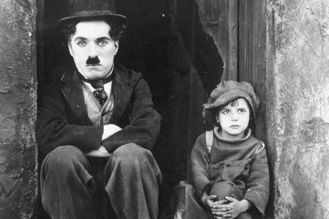
« Le Kid » de Charlie Chaplin est basé sur la lumière américaine
Le jeu d'acteur et l'Actor Studio
Quand on parle de « jeu d'acteur », les adjectifs qui reviennent souvent sont « bon », « réaliste », « mauvais », etc. Mais la notion de réalisme varie selon les époques, les genres et les lieux géographiques.
À la base, l'Actor Studio était une école de théâtre créée en 1930 par Lee Strasberg. C'est ce qu’il a appelé littéralement un « atelier d'acteurs » à caractère collectif : tout se fait en discussion. Cette technique se base sur une théorie du théâtre russe : le système Stanislavski (dont Strasberg va fortement s'inspirer). Stanislavski disait que ce qui importe aux spectateurs, c'est la vie intérieure de l'acteur, ce qui se passe à l'intérieur de l'acteur pour qu’il joue ces expressions. Le jeu d'acteur repose sur cette capacité à montrer l'introspection de soi. Observation-imprégnation-identification : ce sont les 3 phases qu'un acteur doit effectuer pour s’imprégner du personnage à incarner. L'acteur doit rechercher les motivations personnelles du personnage en se basant sur ses propres expériences. Les acteurs de l'Actor Studio doivent trouver leurs propres mots, leur propre manière de lire le script. Certains grands noms sont sortis de cette école, comme Marlon Brando par exemple, ou encore Meryl Streep.
Par exemple, Un tramway nommé désir est un film emblématique de l'Actor Studio. Si on regarde la différence entre Blanche et Stanley, on voit une opposition entre une manière de parler liée au théâtre (celle de Blanche) et la manière de parler de Brando, qui n'articule pas, qui parle en mangeant et qui a des manières de rustre : pour lui, le corps passe au-dessus du texte, comme pour les autres acteurs de l'Actor Studio. Le texte, le script, tout cela vient après le rapport au corps.
Un film important : Citizen Kane (Orson Welles, 1941)
C’est probablement l’un des films les plus importants de l'histoire du cinéma. Il est d’ailleurs considéré par de nombreux critiques et cinéastes comme le meilleur film de tous les temps. Orson Welles est réalisateur et acteur dans ce film. Mais s’il est un succès critique, Citizen Kane ne parvient cependant pas à se rentabiliser dans les salles. Après sa sortie, le film disparaît et ne réémerge que grâce à la reconnaissance de certains critiques (comme André Bazin), ce qui lui apporte un renouveau américain en 1956. Le film est édité en DVD et en Blue-ray le 13 septembre 2011 à l'occasion de son 70e anniversaire.
SynopsisCharles Foster Kane (Orson Welles) s’éteint seul dans son manoir. Avant de mourir, il prononce le mot « Rosebud » en laissant tomber une boule à neige. La presse s’empare de ce fait divers et Jerry Thompson (William Alland) essaie de percer ce mystère. En interrogeant des amis, des opposants et des anciennes femmes ou maîtresses du millionnaire, Thompson retracera la vie de Kane, de son enfance pauvre dans le Colorado à la gloire qu’il a connu avec son journal, jusqu’à sa mort solitaire entouré de tous ses biens et du mystère de son dernier mot…
Le film racontant l'histoire du personnage Kane de l'enfance à la vieillesse, il amène donc des nouvelles techniques de maquillage pour vieillir Welles. Welles faisait du théâtre avant de faire du cinéma. Il a fait beaucoup de radio, média le plus populaire de son époque. Il a même adapté La Guerre des Mondes de H. G. Welles à la radio.
Pour reprendre un exemple d’Actor Studio, parlons de Taxi Driver (Martin Scorsese, 1976). La célèbre réplique « You talkin' to me » vient d’une méthode typique de l'Actor Studio. En effet, les acteurs n’ont pas les dialogues dans leur script. On y voit les accessoires, les décors, les gestes, mais seulement quelques phrases vagues sur l’acting : rien n’est prévu avec un miroir, les acteurs doivent réfléchir à la manière dont leur personnage agirait selon une situation donnée.
Tout Taxi Driver est basé sur l'improvisation. Même en préparant le film, Scorsese a laissé une grande place à l'improvisation. Le film permet d’introduire deux notions, deux sortes d’immersion :
L’immersion sociale : De Niro est vraiment « devenu » taxi, il est allé à la base militaire de midwest et a rencontré un vrai taxi pour parler avec lui dans le but de s'immerger le plus possible dans son quotidien.
L’immersion psychologique : les acteurs vont recréer toute l'intériorité personnelle de leur personnage. Ils doivent faire des recherches, ce qui est typique de l'Actor Studio.
Analyse de la mise en scène dans Citizen Kane
Nous pouvons observer plusieurs éléments intéressants : l’organisation de l'espace au sein du plan (les lignes de force, la disposition des personnages et des objets, la composition des plans), les déplacements des acteurs, les gestes et les regards, les voix et les manières de parler, les écarts-rapprochements-mises à distance, les fonctions des accessoires/mobilier/décors, etc.
Lors de la scène où les parents de Kane décident de l’envoyer en pension, les mouvements de caméra suivent entièrement la mère. C'est elle la figure centrale, elle prend toutes les décisions et semble s'afficher comme inébranlable, tandis que le père est mis à l'écart, impuissant.
Au moment de signer, il y a un autre mouvement de caméra et le père est mis en hors-champ. Kane crie « Union forever » dehors, mais sinon il y a un grand silence et le moment de coupe est très marqué. C'est en effet très thématisé : au moment où la fenêtre s'ouvre, il y a un changement de place. Cette fenêtre est comme une guillotine, un symbole de l'écran car avec elle, on change aussi d'opinion sur la mère. Avec cette coupe radicale de 180°, le spectateur voit une autre facette de la mère : les gros plans sur elle nous donne accès à son jeu d'actrice, on se rend compte que sa voix flanche. Il y a également l’apparition d'une musique qui rend l'émotion plus forte. Nous pouvons voir que l'émotion l'envahit, elle souffre, le masque tombe enfin : la mère a une profondeur qui nous fait revoir notre jugement sur elle, c’est un ascenseur émotionnel pour le spectateur.
La composition d'une scène de « Citizen Kane », avec des lignes directrices
La séquence se termine sur la luge ensevelie sous la neige. On peut entendre en même temps un bruit de train qui s’en va : c’est la matérialisation de l'enfance de Kane qui est partie.
Un film important : M le maudit (M - Eine Stadt sucht einen Mörder, Fritz Lang, 1931)
C'est un film allemand, qui sort la même année que Les lumières de la ville de Chaplin. Lang fuira le nazisme et ira à Hollywood, où il produira un certain nombre de films. M le maudit est une œuvre de l'époque de l'interrègne (1927-1937) : à cette époque, on expérimente sur le son, et cela se ressent dans le film de Lang.
M le maudit est intéressant sur le plan sonore, surtout à cause de son leitmotiv (un leitmotiv consiste à associer à un personnage une musique particulière, qui reviendra dès qu'on verra le personnage à l'écran). Parole, bruit, musique, le film est toujours entre-deux, avec toujours un bruit de sifflement, symbolique du personnage de M. Il y a également beaucoup de jeux d'éclairage et de cadrage (surtout avec les hors-champ). Il faut faire attention à la mise en profondeur du propos : ici, on casse le manichéisme, ce qui rend le film complexe.
Le film s’inspire de l'affaire Peter Kürten et quelques autres fait divers semblables. Peter Kürten était l’un des tueurs en série les plus célèbre d’Allemagne. Ayant sévit à Düsseldorf en 1929, la plupart de ses victimes étaient des enfants, comme le personnage principal de M le maudit. Plaidoyer nuancé contre la peine de mort, ce chef d'œuvre du cinéma allemand est une interrogation plutôt dérangeante sur l'aspect criminel de la société, et sur l'irresponsabilité des fous.
SynopsisL'histoire de déroule dans une grande ville allemande. Un tueur en série qui y sévissant (Peter Lorre) en attaquant des enfants est recherché par la police. En raison de leur enquête minutieuse, qui contraint les policiers à surveiller les quartiers populaires, celle-ci finit par inquiéter les criminels de la ville. Les principaux membres de la pègre locale vont alors se mettre à rechercher le tueur, et finiront par le démasquer.
En contrepied de l’Actor Studio, prenons un extrait de En rachâchant (Straub et Huillet, 1982). C’est un jeu psychologisant, sans être de l’Actor Studio. Nous avons là un jeu de rupture avec l’expressivité, ce qui est même contraire à la technique de Strasberg. C’est un paradigme de récitation, un modèle de pensée, on vise la non-expressivité.
Straub veut faire du cinéma marxiste, sans aucun interventionnisme (car l’interventionnisme est considéré comme de l’autoritarisme). Dans la manière de jouer, on met avant tout des sentiments : on met le spectateur devant une lecture du texte qui est biaisée. Straub veut présenter un film brut, « pur ». Les acteurs doivent lire, réciter, ce qui est contraire aux méthodes de l’Actor Studio, où on devient presque le personnage.
Le champ
La notion de champ n’est pas égale à celle de plan. Le plan est une unité de montage pour le spectateur, ce sont des coupes. Au niveau du montage, le plan est la portion de pellicule comprise entre deux collures, deux coupes. Pour le spectateur, chaque changement de plan provoque une rupture dans la continuité visuelle. Le champ, au contraire, est un niveau spatial, une portion de l’espace visible à l’écran et délimitée par le cadre. Au niveau diégétique, c’est un fragment visible du monde du film, qui supposément se continue en-dehors du cadre, sans que le spectateur ne puisse le voir.
Prenons un extrait de M le maudit, lorsque le meurtrier observe sa victime dans un miroir : le champ est complexifié par le surcadrage (qui est un cadre par-dessus le cadre) avec le reflet des couteaux entourant le visage de la jeune fille. On complexifie ainsi le champ d’abord pour l’esthétique visuelle, mais il y a également un enjeu narratif, car le spectateur peut comprendre des choses. Ce champ fait apparaître la jeune fille comme une cible (surtout car elle est au centre du miroir, entourée de couteaux) : on comprend les intentions de M, et la cible qu’il a choisie.
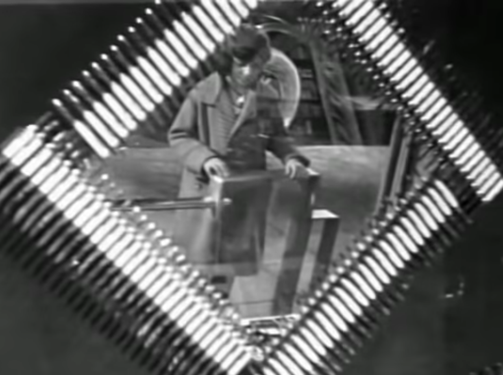
La jeune fille que voit M, entourée de couteaux, signe de sa vulnérabilité
Le moment où M se transforme en assassin est très visible et parlant pour le spectateur. Quand la petite fille s’en va, on comprend que la caméra était dans la vitrine, et là elle change de côté. Le spectateur avait donc un reflet qui représentait le dédoublement de personnalité de M.
La première fois que le spectateur voit le visage de M, il est chez lui face à son miroir : on le voit dans son miroir, et on comprend tout de suite que c’est un personnage double (le motif du miroir est très présent dans cette œuvre). A la fin du film, dans son discours, l’assassin dit que « cet autre lui » le suit : c’est une image verbale intéressante, comme les structures en reflets (ce qui rappelle le moment où il voit le « M » tracé dans son dos, dans un miroir, comme s’il était réellement suivi par lui-même). Le miroir est un moyen de révéler sa schizophrénie.
Ce procédé est également à l'oeuvre dans des films comme Shining et Citizen Kane : la figure schizophrène travaillée avec un miroir est récurrente. Dans Angel Heart (Alan Parker, 1987), le miroir brisé marque l’éclatement du personnage. Dans Black Swan (Darren Aronofsky, 2011), le reflet se dissocie du personnage : on est carrément dans le fantastique. On brouille les pistes du spectateur : par quel côté regarder les personnages ? A cause des miroirs, on ne sait pas si on regarde le personnage ou son reflet.
Dans la séquence de M le maudit, le jeu de reflet montre le processus de dédoublement. Quand le personnage sort du cadre, on entend un bruit de klaxon et un sifflement (Dans l’antre du roi de la montagne, composé par Edvard Grieg en 1874, utilisé ici comme un leitmotiv), le sifflement devient significatif du meurtrier.
L'angle de vue
Ce qui est appelé « angle de vue », c’est l’emplacement de la caméra par rapport à l’objet filmé. À ce niveau, différentes notions méritent d’être explicitées:
La plongée : la caméra est située au-dessus de ce qu’elle filme, par exemple elle filme des personnages en étant au-dessus de leurs têtes.
La contre-plongée : la caméra est située en-dessous de ce qu’elle filme, lorsqu’elle immortalise un bâtiment depuis le bas par exemple.
Le plan incliné (droite/gauche) : à ce niveau, les éléments horizontaux ne correspondent pas aux axes du cadre.
Le plan frontal : la caméra fait face à ce qui est filmé. C’est souvent associé à une frontalité de la mise en scène qui est liée, si le plan est large, à une certaine théâtralité. Parfois, elle se cristallise avec un regard-caméra, un « face-à-face » entre le spectateur et l’acteur.
Dans M le maudit, il a fallu construire un plongeoir pour filmer des scènes extrêmes. Par exemple, dans le plan où les bandits vont dans l’immeuble traquer M, un des bandits reste coincé dans un trou : c’est une plongée verticale, extrême. Dans La passion de Jeanne d’Arc (Carl Theodor Dreyer, 1928), le réalisateur a fait creuser des trous dans le sol pour pouvoir y installer des caméras, et ainsi faire des contre-plongées puissantes des personnages.
Une autre plongée dans M le maudit : dans le plan du début, on voit des enfants qui jouent. Il y a une fragilisation, car ce sont des potentielles victimes de M. Ils chantent une comptine sur un meurtre : c’est une image de ce qui se passe dans cette ville. La fillette au centre joue le rôle du bourreau. La dimension inquiétante de la comptine est montrée avec la mère qui veut qu’ils arrêtent de la chanter. La contre-plongée sur le personnage du chef de la police est emblématique, ça rend le personnage ridicule alors que c’est censé être une figure d’autorité. On voit le policier autrement.
L'échelle de plan
Elle est définie par la grandeur relative du corps humain dans l’espace du cadre. Par analogie, les valeurs de grandeurs sont appliquées à des objets :
Plan général/plan large : ça montre le contexte topologique du film, on voit beaucoup de choses dans le cadre.
Plan moyen : le personnage est cadré en plein pied (on le voit à l’écran de la tête aux pieds).
Plan italien (peu utilisé) : le personnage est cadré de la tête au genou.
Plan américain : le personnage est cadré de la tête à mi-cuisse.
Plan taille : le personnage est cadré de la tête à la taille.
Plan rapproché/plan poitrine : le personnage est cadré en buste, de la tête à la poitrine.
Gros plan : le personnage est cadré au niveau de la tête, du visage.
Très gros plan : ça montre un détail du visage (dit aussi « plan de détail » pour des objets).
Pour mieux se représenter ces notions, voici un schéma représentant les différentes échelles de plans qui sont utilisées au cinéma :
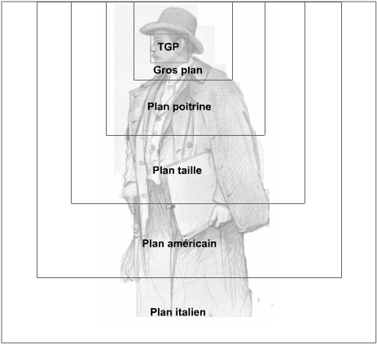
Les différentes échelles de plan
La profondeur de champ (et la focale)
C’est une question de netteté, d’échelonnage des plans dans l’image. La profondeur de champ est une étendue variable de la zone de netteté du champ dans sa profondeur, définie par des réglages de l’appareil de prise de vue (au niveau de la mise en cadre). La profondeur de champ varie en fonction de la focale de l’objectif, de l’ouverture du diaphragme et de la position de l’objet sur lequel est fait le point. Si la profondeur de champ est forte, le premier plan et les arrières-plans seront nets. Si la profondeur de champ est, au contraire, faible, seul le premier plan sera net. ATTENTION : ne pas confondre la « profondeur DE champ » avec la « profondeur DU champ », qui désigne la profondeur de l’espace situé devant la caméra au moment de la prise de vue (espace profilmique, niveau de la mise en scène). Voici deux notions, utilisées en photographie et en cinéma, qui sont importantes :
La longue focale : montre un éloignement
La courte focale : signifie un rapprochement
La focale : il s'agit de la distance entre l’objectif et le foyer de l’image (c’est-à-dire l’endroit où elle est nette). La longueur de la focale permet de varier la portion d’espace nette couverte par l’objectif : avec une courte focale (un objectif grand angle), l’angle du champ couverte est plus vaste qu’avec une longue focale par exemple.
Un exemple de plans déformant se trouve dans Matrix (Lana et Lilly Wachowski, 1999), avec le pistolet qui devient énorme selon la prise de vue, et qui donne ainsi un effet d’écrasement de l’image.
Un film important : La passion de Jeanne d'Arc (Carl Theodor Dreyer, 1928)
Ce film était à la base fait pour être parlant, mais il est finalement tourné en muet pour des raisons techniques. Cette œuvre est donc déconcertante à première vue, puisqu’elle a tous les codes du cinéma parlant, mais elle est muette. Il est uniquement musical, à l'exception du bruit des cloches.
Le film de Dreyer connait des difficultés à sortir en salle, notamment à cause de la censure (de la part de l’Eglise, du nationalisme français et anglais, etc). De plus, un feu va détruire les copies de ce film. Plus tard, on va refaire le film à partir de rush, mais celui-ci prend feu aussi. En 1981 apparait la copie de la première version qui avait été produite avant la censure : l'originale.
Le tournage a été fait avec les décors les plus chers de l'époque, les mêmes que pour Le cabinet du Dr Caligari, mais Dreyer prend le parti de faire un cadrage en gros plans et en contre-plongée. Fun fact : Deyer, voulant une grande contre-plongée, demanda à ce que des travaux soient effectués dans les décors, afin de creuser des trous dans le sol pour y mettre la caméra et avoir plus de contre-plongée. Ces travaux lui ont valut, de la part de tout l'équipe technique du film, le surnom de « Carl Gruyère ».
SynopsisEn 1431 débute le procès de Jeanne (Renée Falconetti) dans le château de Rouen, devant un tribunal ecclésiastique au service de l'occupant anglais. Enchaînée, et avec une simplicité désarmante, elle explique ses gestes devant une foule qui a décidé de la condamner avant même le début de son jugement.
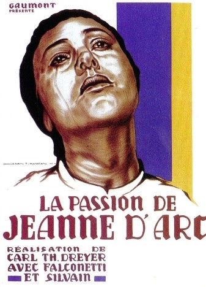
A l’époque de la sortie de son film M le maudit, Fritz Lang créait tout artisanalement, sans utiliser de grue ou travelling pour les mouvements de caméra. Dans plusieurs séquences du film, le mouvement de caméra est fait pour faire bouger le regard du spectateur, pour qu’il découvre peu à peu le « m » dans la main de l’espion.
Il y a des gros plans (quand le tueur sort le couteau de sa poche par exemple) qui arrivent par des coupes franches ou des changements de plans. Le spectateur s’avance par un changement de plan, mais il n’y a qu’un seul plan qui laisse la place au retardement de la découverte du « m » dans le dos. Là, le mouvement de caméra prend le sens de retard par rapport aux autres plans, qui sont fixes. La caméra rejoue le geste du dénonciateur, et ça nous ramène au fait qu’on est des deux côtés à la fois : on a vu le dénonciateur agir, et on a vu M ne pas comprendre ce qui se passait : on en sait plus que les personnages eux-mêmes.
Couleur et cinéma
Dès la lanterne magique, les plaques d'images étaient en couleur. Le coloriage des plaques va être transmis au cinéma, aux films. On va développer des techniques précises adaptées au coloriage des films. Le leader du coloriage de film est Pathé (ils employaient des femmes pour colorier car elles étaient apparemment plus douées que les hommes avec la couleur, et pour le travail de précision). Le coloriage est un aspect important pour Pathé, car les copies coloriées sont toutes uniques, c’est de l’artisanat. Au début, elles ne sont utilisées que pour les courts-métrages. Le studio a depuis développé une autre technique : découper dans la pellicule ce qu’on veut d’une couleur particulière (c'est la technique du pochoir).
Une autre technique est le teintage, ou virage, des copies. C’est une technique peu coûteuse. On passe l’intégralité d’une séquence dans une couleur (pour la nuit on met dans du bleu, pour le jour dans du jaune, pour le soir dans du orange, pour les amoureux qui se retrouvent dans du rose, pour la passion dans du rouge, etc). Pour le virage, on développe l’image en noir et blanc sans le support transparent et, avec un procédé chimique, on teinte l’image et le support de deux couleurs différentes. Le teintage consiste à plonger le film dans la couleur et à coller l’image en noir et blanc dessus.
Les premières « couleurs naturelles » viendront avec le Kinemacolor. La caméra Kinemacolor consiste à mettre un filtre vert et rouge devant la caméra : ça donne des films bichromes. Gaumont invente le Chronochrome, qui dispose de trois objectifs sur chaque projecteur. Le projectionniste doit donc aligner les trois objectifs couleurs. Cela donne des couleurs magnifiques, mais le dispositif est fastidieux et coûteux, il ne connaitra pas énormément de succès. Le Technicolor, la génération suivante, a quatre procédés :
Procédé Technicolor n°4 : soustractif, trichrome, 1932 (stable et dominante jusqu’au milieu des années 50).
Le Technicolor est un procédé compliqué : nous avons 3 bobines, chacune enregistre une couleur primaire et on les superpose ensuite par couche. Problème : c’est une caméra volumineuse et bruyante. Le premier film tourné en Technicolor et en prises de vues réelles est La Cucaracha (Lloyd Corrigan, Pioneer Pictures, 1934), avec un procédé technicolor n°4. La couleur apporte un changement des pratiques. Il y a une codification culturelle des couleurs, pour qu’elles soutiennent la narration. La couleur devient possible dès le milieu des années 30. La couleur est associée au spectaculaire, mais malgré tout les films noirs restent pour beaucoup l’essence du réalisme.
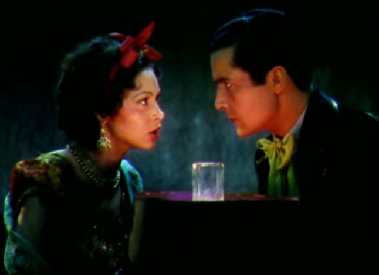
Extrait de « La Cucaracha », l'un des premiers films en couleur
Deux transitions sont à noter dans l’histoire du cinéma :
Le son, qui devient en quelques mois la pratique dominante du cinéma.
La couleur, qui elle met environ 20 ans à devenir une pratique dominante. Cela s’explique par des enjeux culturels : les gens ne refusent pas tout à coup de voir des films en noir et blanc comme ils refusent soudain de voir des films muets.
Un film important : Le faucon maltais (The Maltese Falcon, John Huston, 1941)
Ce film est intéressant car il permet de faire des liens avec les autres films vus précédemment. Le faucon maltais sort la même année que Citizen Kane. C’est un film hollywoodien des studios Warner Bros. Ces studios font partie du « Big Five », qui est composé de MGN, Paramount, 20th Century Fox, Warner Bros et RKO. Le groupe des « Little Three » est lui composé d’Universal, de Columbia et de United Artists. C’est le premier film de Huston, mais aussi le premier d’Humphrey Bogart dans un rôle principal.
Le film a un éclairage low-key à cause du code Hays, qui règne encore à cette époque. C’est un moyen de ne pas montrer tous les détails : on peut dissimuler ce qui dérange avec un manque de luminosité. Le low-key est classique, et basé sur un roman noir de Dashiell Hammett. Les films noirs datent de 1941 et ne sortent pas en France (à cause de la guerre notamment) : on va donc les voir à la fin de la guerre. Le terme « film noir » vient de France. L’intrigue de ces films est complexe, et souvent incompréhensible. On retrouve souvent dans ces films deux figures emblématiques : le détective et la femme fatale.
Ce film offre ainsi un nouveau souffle à la carrière de Bogart, et il offre une certaine renommée à Huston. Considéré par certains comme un coup de maître, Le faucon maltais est devenu un classique du cinéma noir.
SynopsisBrigid O'Shaughnessy (Mary Astor), une jeune femme, charge Miles Archer (Jerome Cowan), un détective, de filer un certain Floyd Thursby. Dans la nuit, Archer et Thursby sont tués. Contacté par O'Shaughnessy, Sam Spade (Humphrey Bogart), le collègue d’Archer, décide d’enquêter. Il découvre que les meurtres sont liés à une statuette de faucon disparue à Malte au XVIe siècle et d’une valeur inestimable. Trois personnes cherchent à s’en emparer : O'Shaughnessy, Kasper Gutman dit Fatman (Sydney Greenstreet) un bandit, et Joel Cairo (Peter Lorre).
Spade décide de s’associer avec les brigands mais quand il met enfin la main sur la statuette, il découvre qu’il s’agit d’un faux. Il comprend alors que c’est O'Shaughnessy qui avait assassiné Archer. Malgré ses sentiments pour elle, il décide de la dénoncer à la police. Depuis le départ, il cherchait avant tout à venger la mort de son collègue.
Prenons un extrait de Vivre sa vie (Jean-Luc Godard, 1962). Nous suivons le personnage d’Anna Karina, actrice modèle pour Godard, qui va voir La passion de Jeanne d’Arc de Dreyer au cinéma. Dans les gros plans, on voit l’émotion, l’empathie pour Jeanne d’Arc (Karina pleure même). Il y a comme une mise en abyme du spectateur.
Les mouvements de caméra
Les mouvements de caméra miment la pénétration de la pensée des personnages : on comprend la portée des mots et leurs implications dans l'action du film. Voici quelques notions importantes :
Le travelling : c'est lorsque la caméra se déplace. Elle est en général placée sur un support mobile (un chariot sur rails, un véhicule, etc). On distingue différents types de travelling selon la trajectoire du déplacement: latéral, avant, arrière, circulaire, etc. Dans le cas du travelling d’accompagnement, la caméra suit le personnage dans son déplacement : c’est le décor qui défile à l’arrière-plan, alors que les personnages conservent une même position dans le cadre, comme c'est le cas dans cet extrait de Breaking Bad (Vince Gilligan, 2008-2013) :
Le travelling compensé (ou trans-trav) : c'est la combinaison d'un travelling et d'un zoom, le zoom compensant le travelling dans le sens contraire de ce dernier. Le sujet filmé conserve sa taille, alors que l'arrière-plan change de dimension. Ce procédé est souvent utilisé pour créer un effet de perturbation de la perception chez le spectateur, correspondant souvent à l'état psychique du personnage (peur, ivresse, vertige, etc). Un exemple se trouve dans Les dents de la mer (Steven Spielberg, 1975), lorsque le requin attaque des baigneurs et que le chef de la police, Martin Brody, se rend compte avec horreur de ce qui se passe.
Le zoom : cela désignait avant tout l'objectif à focale variable, puis, par analogie, ça désigne aujourd'hui le changement de focale et l’effet de changement de d’échelle de plan au sein d’un même plan (cadrage plus serré ou plus large). La différence perceptive entre le travelling avant ou arrière et le zoom repose sur la mobilité de la caméra. Le travelling change la composition du plan et la place des objets les uns par rapports aux autres. Le zoom n’entraine pas de changement de ces positions, ne modifiant que la portion du champ couverte ainsi que la grandeur des éléments présents dans cet espace. Le but du zoom est l'identification aux personnages filmés, comme dans cet extrait d'Orange mécanique (Stanley Kubrick, 1971) :
Le panoramique : c'est lorsque la caméra pivote sur son axe, horizontalement ou verticalement. La différence entre le travelling et le panoramique est que le travelling implique que la caméra bouge, alors que pour un panoramique la caméra est sur un pied fixe qui pivote, elle ne bouge pas. Le panoramique est généralement utilisé pour montrer au spectateur un grand espace, comme dans cet extrait de M le maudit, où le panoramique a pour but de montrer l'entier de la pièce au spectateur :
Parlons maintenant un autre extrait de M le maudit. Quand le commissaire demande le dossier de Marga Perl, une des victime du tueur, il y a un travelling avant, qui est saccadé. Ce n’est pas un zoom car on voit que la caméra bouge (c’est le principe du travelling avant). Le mouvement de caméra est calqué sur la parole, on s’avance à chaque fois qu’il dit « Ariston » : l’expression de son visage joue la recherche. Cet effet introspectif nous est donné, on s’approche de sa réflexion avec le mouvement de caméra. C’est le même procédé avec le vendeur de ballons quand il entend M siffler une deuxième fois. L’embrayage le plus simple pour entrer dans la pensée est matérialisé par une entrée dans la tête du personnage. C'est un procédé récurrent dans les séries policières ou médicales par exemple : nous retrouvons un travelling avant lorsque le personnage fait une découverte importante.
Dans M le maudit, quand la pègre amène M au sous-sol, c’est une vision panoramique (la caméra pivote, latéralement et verticalement) : il y a un effet de rotation pour avoir un point de vue englobant, pour ancrer le plan dans un point de vue, un regard, et pour que le spectateur ait une impression de foule. Ce que dévoile ce panoramique, c’est l’étendue : M est seul face à beaucoup de criminels qui veulent le tuer. Ce panoramique nous fait partager son point de vue et le vertige d’être seul.
Dans la suite de la séquence, le personnage s’avance vers la caméra et la caméra avance aussi par un travelling avant sur M. Ce mouvement de caméra provoque la pitié : on utilise la caméra pour créer du langage. Par le travelling avant, il y a une plus grande proximité avec les personnages, physiquement et cognitivement : on rejoint sa détresse car on voit un homme suppliant : une adhésion à son personnage se crée. Après, il y a l’intervention d’un personnage hors-champ. Avec un travelling arrière on le dévoile et il s’avère être finalement le vendeur de ballons. On prend de la distance, comme la caméra
Peter Lorre dans « M le maudit »
Le hors-champ
Il s'agit d'un espace qui est exclu par le cadrage, mais qui le continue néanmoins imaginairement. Le hors-champ est construit par le spectateur selon le principe de la continuité de l’univers diégétique. Attention : ne pas le confondre avec le hors-cadre, qui désigne lui l’espace réel de tournage qui est exclu par le cadrage (les projecteurs, les réflecteurs, toute l’équipe de tournage, etc).
La main qui vient du hors-champ est un motif récurrent dans M le maudit. C’est un film remarquable pour parler du hors-champ. Le fait de ne pas montrer le visage est toujours très fort au cinéma. Quand on voit juste une main, l’acte compte énormément : ça devient la main de toute la société agissante. Il existe 6 segments du hors-champ, et M le maudit les travaille tous. Noël Burch définit les six segments du hors-champ ainsi :
Les quatre premiers segments sont déterminés par les quatre bords du cadre : ce sont des projections imaginaires dans l'espace.
Le cinquième segment ne peut pas être défini avec la même précision, mais personne ne contestera l'existence d'un espace hors champ « derrière la caméra », distinct des segments d'espace autour du cadre, même si les personnages y accèdent généralement en passant juste à gauche ou à droite de la caméra.
Enfin, le sixième segment comprend tout ce qui se trouve derrière le décor : on y accède en sortant par une porte, en contournant l'angle d'une rue, en se cachant derrière un pilier… ou en passant derrière un autre personnage.
M le maudit joue sur les ombres et les silhouettes. Le sifflement va devenir fondamental dans le jeu du hors-champ : on l’entend mais on ne voit pas le personnage. Ce bruit nous fait comprendre cette présence, mais on ne nous la montre pas. Le début du film joue sur l’absence d’Elsi (la fillette du début). Il y a une certaine esthétique de l’absence. La mère, même en ouvrant la fenêtre, ne la voit pas. La vision du grenier, de la chaise et de l’assiette vides montre l’absence. Avec l’entrée de la balle dans le champ, on comprend qu’elle est juste à côté et que pousser la balle était son dernier geste avant la mort. Le ballon dans les câbles électriques a la forme d’un enfant, il se débat dans les fils électriques et s’envole dans le ciel : c’est une allégorie de la mort, une personnification de la petite fille qui pousse son dernier soupir.
Prenons comme exemple un extrait du film Le Village (Night Shyamalan, 2004). Le hors-champ est ici très travaillé. Nous avons un champ-contrechamp lorsque le personnage de Joaquin Phoenix se fait poignarder. Les personnages sont parfaitement en face-à-face, avec une alternance des champs, et c’est habituellement quelque chose de rare au cinéma. Les regards des deux acteurs sont très signifiants. On relègue souvent au hors-champ le crime pour atténuer la violence, ce qui rappelle le code Hays qui censurait les scènes de crime et la violence : c’est pour cela que les films d’une certaine époque préféraient mettre la violence et la mort dans le hors-champ, là où le spectateur peut comprendre ce qui se passe mais ne le voit pas.
À la fin de la scène, on s’associe à l’aveuglement de la jeune fille. Avec le travelling arrière et la contre-plongée, nous sommes dans la même condition qu’elle, cognitivement et physiquement, puisque notre vue sur les événements est restreinte. Le regard des découvertes est important, on ne voit rien de l’espace autour d’elle. C’est seulement quand elle identifie ce qu’elle touche que le spectateur va faire pareil.
Un film important : The Hours (Stephen Daldry, 2001)
C’est l’adaptation d’un roman du même nom, de Michael Cunningham. Ce film est une variation du livre Mrs Dallowey.
SynopsisCe film raconte une journée cruciale des vies respectives de 3 femmes de différentes époques, dont les destins sont connectés par le roman de Virginia Woolf, Mrs Dalloway:
En 1923, en Angleterre, nous suivons une romancière rongée par la maladie mentale, Virginia Woolf (Nicole Kidman), qui écrit un livre, Mrs Dallowey. Elle finira par se suicider dans une rivière proche de chez elle.
En 1951, à Los Angeles, nous suivons une mère au foyer enceinte, Laura Brown (Julianne Moore), qui lit le roman de Woolf, et qui finira par abandonner sa famille par instinct de survie. À la suite de la lecture de Mrs Dallowey, elle comprendra que seul le suicide pourra la tirer de son mal-être.
En 2001, à New York, nous suivons Clarissa Vaughan (Meryl Streep), une éditrice en couple avec une autre femme qui passe son temps à s’occuper de son meilleur ami atteint du sida, Richie Brown (le fils de Laura, la deuxième femme que nous suivions), qui finira par se suicider en se défenestrant. Il appelait son amie « Mrs Dallowey », car selon lui elle est la version moderne de l’héroïne du livre de Virginia Woolf, puisqu’elle s’interroge constamment sur le bonheur.
Le montage entre les 3 histoires est fascinant : les liens se créent presque entre chaque plan, certains raccords entre les plans sont même directs.
De la mise en cadre à la mise en chaîne : le plan-séquence et les coupes
Le plan-séquence
Il s’agit d’une unité complète du récit, la séquence, qui est tournée en un seul plan. Souvent nous qualifions de « plan-séquence » un plan qui, par rapport à l’ensemble de ceux du film, se distingue par une plus grande durée, sans pour autant qu’il ait une autonomie totale. Le plan-séquence se situe dans la mise en cadre, juste avant la mise en chaîne. Le plan-séquence est très lié à la notion de money shot : le money shot est un plan qui coûte très cher comparé aux autres plans du film (à cause d'effets spéciaux coûteux, de mouvements de caméra difficiles à réaliser, de cascades, etc), et généralement c'est un plan tourné en plan-séquence. De plus, le money shot est un argument promotionnel de choix : le plus souvent présent dans la bande-annonce, il est pensé pour donner envie aux spectateurs d'aller voir le film au cinéma.
Prenons un extrait de Fenêtre sur cour (Alfred Hitchcock, 1954) : le début est un plan-séquence, car son contenu est cohérent et complet. Pas un mot n’est prononcé mais le spectateur a tout compris (qui, quoi, où, comment). Par le plan sur la jambe cassée, la caméra s’arrête presque pour donner du poids et de l’attention à tout ce qu’on voit. On voit également un appareil photo cassé, et pleins de photographies : ce plan nous révèle le métier de L. B. Jefferies, le personnage principal. En un seul mouvement on nous explique le cadre, les personnages, tout :
Prenons un autre extrait, mais cette fois tiré de The Revenant (Alejandro González Iñarritu, 2015). La séquence de l’ours est un plan-séquence qui ne comporte qu’une seule coupe. La raison d’un plan-séquence à ce moment est une immersion : si on était pas si proche de l’action, on ne verrait rien (le cadrage est extrêmement proche de l’action), ça rend notre immersion et notre empathie pour le personnage plus grande. Cette scène aurait fait partie des ellipses à l’époque du code Hays, à cause de sa violence. L’effet de buée que l’ours met sur la caméra donne un effet de réel, mais on ne peut pas s’empêcher de se demander comment ils ont fait cela. Cet effet nous fait prendre de la distance et sortir un peu du film, ce qui crée une ambivalence. L’ours a un caractère aléatoire et imprévisible. Par le plan-séquence, on est pris dans cette temporalité particulière de l’ours. La coupe vers la fin de la séquence marque le fait que le lien victime-bourreau est rétablit : c’est le signe d’un changement dans les rapports de force entre l’ours et le personnage. La deuxième partie de la séquence est guidée par la bête. À la fin du plan, on suit les mouvements de l’ourson qui apparait, c’est un point de vue englobant, anonyme et omniscient.
Le procédé du plan-séquence est aujourd’hui bien ancré dans le cinéma, à tel point que certains films misent tout là-dessus. C’est le cas du film La corde d’Alfred Hitchcock (1948), qui est un film fait en un seul plan, mais qui contient tout de même quelques coupes discrètes, faites pour une question de bobine (les bobines n’avaient que 10 minutes de film). Hitchcock a voulu faire un film sans coupes, mais comme il allait devoir utiliser plusieurs bobines, il a rendu les coupes le plus discrètes possibles. D’autres films n’utilisent qu’un seul plan, l’un des plus célèbre étant Birdman d’Alejandro González Iñárritu, sorti en 2014
Le montage
Pour illustrer le montage, prenons un extrait de The Bourne Ultimatum (Paul Greengrass, 2007). Il y a environ 29 plans de bagarre en 23 secondes, donc dans ce film un plan dure moins d’une seconde. Pourtant c’est fluide, il y a des raccords entre les mouvements, etc. Comment bien mettre ensemble les mouvements pour faire un montage ? Pour cela, il faut créer de la continuité dans le mouvement, le monteur choisit de couper au moment où le mouvement reprend, ce qui donne l’illusion de mouvement continu. On crée par le montage une continuité dans les mouvements des personnages.
Le régime de la transparence : c’est un régime de mouvement continu. Le but du dispositif filmique est la continuité, l’immersion, la transparence pour le spectateur. Le système de la continuité (ou régime de la transparence) est le B.A BA du cinéma, sans cela le film ne peut pas exister. Le montage a une nature disjonctive, une nature de rupture entre deux plans. Faire du cinéma, c’est gérer des bouts de films qu’on met ensemble (c’est une véritable rupture physique).
Un film important : À bout de souffle (Jean-Luc Godard, 1960)
C’est un film de la Nouvelle Vague, mouvement mené par François Truffaut, et c’est aussi le premier long-métrage de Godard. On retrouve dans ce film des références à certains des films que Godard apprécie particulièrement. Il a d’abord été critique pour Les cahiers du cinéma. Il s’intéressait beaucoup au cinéma américain : les réalisateurs français pensaient qu’on ne pouvait pas aller plus loin que le cinéma américain, mais la Nouvelle Vague déconstruit les codes classiques.
La Nouvelle Vague s’opposait aux codes classiques, aux traditions et aux corporations. Permettant à de jeunes cinéastes de produire leurs films, ce mouvement a comme principes le changement de société et de mœurs, le désir de transformer le cinéma et de rompre avec le passé. Les films de la Nouvelle Vague sont aussi caractérisés par leurs héros. Contrairement aux personnages hollywoodiens, les héros sont jeunes et contemporains. Ce sont des gens ordinaires, qui ne s'occupent que de leurs affaires personnelles. Ils sont en quête d'indépendance, souvent oisifs, n'ont pas peur d'enfreindre la loi, sont indifférents à la société et à la famille et sont en quête d'amour.
SynopsisMichel Poiccard (Jean-Paul Belmondo), un jeune voyou, vole une voiture à Marseille pour se rendre à Paris, et en route il tue un gendarme qui voulait le verbaliser. Arrivé à Paris, il retrouve une étudiante américaine, Patricia (Jean Seberg), avec laquelle il a eu récemment une liaison. Pour se faire un peu d'argent, elle vend le journal New York Herald Tribune sur les Champs-Élysées. Tout au long du film, Michel essaiera de la persuader de coucher à nouveau avec lui, et elle lui résistera un certain temps en affirmant qu'il ne l'aime pas vraiment. La police l'ayant déjà identifié, sa photographie est publiée dans tous les journaux. Patricia, par amour, ne le dénonce pas lorsqu'elle est interrogée par un inspecteur. Michel reprend contact avec des gens de la pègre afin de récupérer l'argent qu'on lui doit. La veille du départ projeté pour l'Italie, Patricia le dénonce à la police afin de le forcer à la quitter, mais Michel refuse de prendre la fuite. Mortellement touché par un policier, il s'écroule au carrefour d’une rue et meurt.
Pour assembler des scènes ensemble de manière fluide, on doit utiliser le montage par continuité (aussi appelé « régime de la transparence »). Le montage par continuité serve à ce que le spectateur ne se rende pas compte du montage, il s'assure de la continuité narrative de l'action. Le montage n’est pas qu’une simple étape du processus filmique : on planifie la mise en scène et la mise en cadre par rapport au montage : c’est un ensemble, un système stylistique (les 3 « mise en… » vus précédemment).
Avec la continuité narrative, des éléments plus profonds se dégagent car le but est de raconter une histoire de façon claire et cohérente. Il ne faut pas ébranler le spectateur. Le régime classique (la collure parfaite) comprend :
Le montage par continuité (le régime de la transparence).
Le système stylistique (« mise en… »).
Les effets de continuité narrative.
Les schémas de montage du style linéaire classique.
Le montage compose, mais le cadrage et la mise en scène sont travaillés pour mieux décomposer l’espace et servir le montage.
La règle des 180°
Le plan de situation (ou establishing shot) permet de présenter au spectateur l’espace avant de le découper (en gros plans, en plans larges, etc). Le plan de situation positionne l’espace et l’axe du jeu.
La principale qualité du système des 180° est de produire des descriptions spatiales claires : ainsi, le spectateur sait toujours où sont les personnages les uns par rapports aux autres et par rapport au décor. Plus important encore, il sait où il se situe lui-même par rapport à l’action. Cet espace clarifié, déployé dans toute sa cohérence, est conçu pour que le spectateur ne soit pas distrait du centre d’attention : l’enchainement narratif des causes et des conséquences. La règle des 180° permet de toujours savoir qui regarde qui, et elle garantit des orientations constantes (la direction des regard, la direction des mouvements, etc).
Cette règle des 180° domine le jeu du champ/contre-champ. L’axe de jeu et imposé par les acteurs/personnages qui entrent en interaction. La caméra ne franchit pas cette ligne, elle reste dans ces 180°. On verra toujours le personnage qui parle sous cet angle, et pareil pour son interlocuteur. Ça permet de se dire que les décorateurs ont fait leur travail à moitié (car on n’est pas sûr qu’il y ait un décor dans l’espace où se déplace la caméra). Les regards des personnages se croisent dans ces 180°.
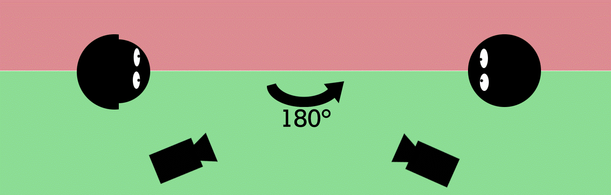
Un schéma de la règle des 180°
La règle du champ/contre-champ
C'est la figure du montage qui repose sur l’alternance de plans des visages de deux personnes en interactions. La relation entre les plans est, le plus souvent, construite par des raccords-regard. Dans le système du montage par continuité, la caméra doit rester du même côté de l’axe de jeu pour que la représentation des relations spatiales reste cohérente d’un plan à l’autre (c'est la règle des 180°), le terme renvoyant à l’axe qui relier les deux acteurs.
Cette règle est liée à celle des 180°. Une fois la ligne des 180° degrés établie, on peut montrer alternativement les deux côtés. Le champ/contre-champ n’est pas une stricte inversion de la direction des prises de vue par la caméra : c’est un plan montrant (généralement de trois-quarts) ce qui se trouve en face de ce qu’a montré le premier plan. Pour que ce soit plus clair, prenons un exemple tiré du Seigneur des Anneaux : les deux tours de Peter Jackson (2002) dans lequel Gollum fait un monologue, mais il a un dédoublement de la personnalité : ce trouble est rendu visible par le champ-contre champ, toujours sur lui, mais qui permet au spectateur de saisir que deux personnalités sont en conflit, comme dans la capture d'écran ci-dessous :
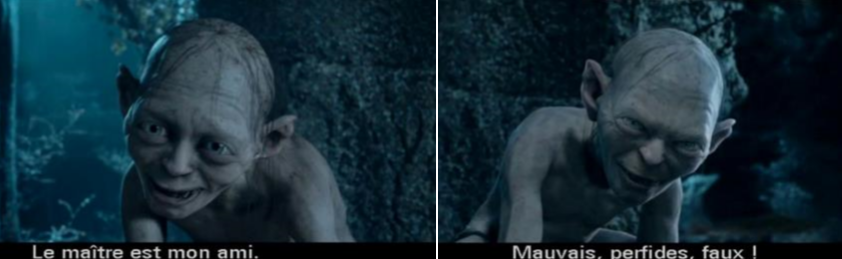
Illustration d'un champ-contre champ avec un exemple tiré du film « Le Seigneur des Anneaux »
Les personnages en amorce
Ce sont des personnages qui sont là pour nous situer dans l’espace, ils forment la composition qui amène le regard sur l’interlocuteur. Le visage appelle le regard. Les personnages sont en amorce quand ils se trouvent au bord du champ de la caméra, comme dans cette scène de Seven (David Fincher, 1995), où le cadavre joue le rôle de personnage en amorce :
Un exemple de personnage en amorce dans « Seven »
Tout est fait pour mettre en valeur les personnages, car le montage n’est pas censé être remarqué par le public. Tout sert le montage : l’action, les personnages, les dialogues, etc. Ce qui rend le système de la continuité « invisible » est sa capacité à mettre en œuvre une série de techniques si bien acquises par le spectateur qu’elle lui est automatique. Cette idée d’acquisition automatique est un postulat défendu par de nombreux théoriciens du cinéma.
Prenons maintenant un exemple tiré de Printemps tardif (Yasujiro Ozu, 1949). Ici, on transgresse la règle des 180° : l’axe est sur notre gauche, puis on passe de l’autre côté de l’axe de jeu. Les personnages ne croisent pas leurs regards. Dans le deuxième extrait du film (les personnages roulent à vélos), le raccord de direction (directions dans l’espace, où vont les personnages) n’est pas respecté. On croit voir un raccord-regard et donc une dialectique champ/contre-champ, sauf que les deux personnages roulent côte à côte sans se regarder. Il y a aussi des regards-caméras : la caméra est sur l’axe des 180°, et c’est une transgression car c’est une manière violente de rappeler sa place au spectateur.
Le raccord
C’est un moyen de passer d’un plan à l’autre, en général de façon continue, en gommant la collure entre les plans (la saute est qualifiée de « faux raccord » s’il y a des erreurs). Il y a plusieurs types de raccord :
Le pont sonore : c'est lorsqu'un son entendu dans un plan A se prolonge, provisoirement ou non, dans le plan B. Cet usage sert à atténuer la discontinuité des images.
Le raccord-regard : désigne la relation de montage entre deux plans s’établissant quand un premier plan présente un regardant et le second l’objet du regard. Le raccord-regard est particulièrement important dans le cas du champ/contre-champ où le montage doit créer l’impression que les personnages se parlent en face à face.
Le raccord de mouvement : désigne le cas où un mouvement esquissé dans un plan se prolonge dans le plan suivant. La conservation de la trajectoire et de la vitesse du déplacement provoque un effet de continuité qui minimise la portée du changement de plan.
Le raccord de direction : le déplacement qui conduit à la sortie du champ se prolonge dans le plan suivant en donnant l’impression d’une continuité spatiale des deux plans selon un axe linéaire décrit par le déplacement. Ainsi, un personnage qui sortirait par la gauche du cadre entrerait dans le plan suivant par le bord droit du cadre.
Ainsi donc, le parti pris d’Ozu dans pratiquement tous ses films, en transgressant ces règles de raccord et la règle des 180° peut :
Exprimer une incommunicabilité des personnages ? Non, car dans plusieurs de ses films la règle des 180° n’est pas respectée mais les personnages sont en communication.
Témoigner d’une appréhension de l’espace différente au Japon ? Très peu probable.
Revendiquer d’autres principes que ceux fondamentaux du cinéma occidental ? Ce serait donc une transgression volontaire de la part d’Ozu.
« Règle » et ressource stylistique
Le champ/contre-champ implique un jeu, de frôler la ligner des 180°. C’est rare de voir des films qui respectent parfaitement ces règles. Par exemple, dans Le faucon maltais, à un moment la femme parle mais on voit l’homme à l’écran : ce procédé sert à attirer l’attention sur le dialogue.
Prenons à présent un extrait de Shining (Stanley Kubrick, 1980). Nicholson entre dans la scène pour devenir une amorce, la caméra adopte son point de vue comme c'est le cas dans la capture d'écran ci-dessous. La musique ajoute une dimension horrifique à la scène. On parle de la proximité quand l’amorce (ici jouée par Nicholson) apparait dans le plan. L’amorce consiste à être ensemble dans un même plan, ce qui amène une évolution amoureuse, ou comme ici, une évolution de la menace. Le placement de la caméra rend le discours de Nicholson encore plus menaçant, puisque lorsqu'il commence à parler, le spectateur ne voit pas son visage.
Jack Nicholson en amorce d'une scène de « Shining »
Un film important : Le cuirassé Potemkine (Броненосец « Потёмкин », Serguei M. Eisenstein, 1925)
C’est un grand classique du cinéma. Eisenstein a d’abord fait des études d’architecte, puis il a été ingénieur dans l’Armée Rouge avant d’intégrer le mouvement du Proletkult (le culte du prolétariat). Son premier film a été fait pour le théâtre (c’est un court-métrage). Son premier long-métrage est La Grève, sorti 1924. Le but de ce film était que le spectateur se révolte contre le système en place après avoir vu cette œuvre. Le cuirassé Potemkine est divisé en deux parties : une première partie où les marins s’insurgent contre le commandant du navire, et une seconde où la foule se fait tirer dessus et tente de fuir. C’est un très bon exemple de montage, on retrouve dans ce film l’idée de choc entre les plans. Il n’y a pourtant pas de fluidité entre les plans.
Le typage chez Eisenstein est simple (ce sont des caricatures, des ensembles de traits définissant les individus dans la société. Par exemple on retrouve la figure de l’ouvrier, du marin, de la mère… Les individus forment ici une collectivité, il n’y a pas d’individualité de la société). Un typage complexe consisterait à partir de la pluralité pour créer une unité : on accumule les plans et les personnages, et plusieurs individus deviennent l’emblème d’une émotion transmise aux spectateurs (par exemple la mère et son enfant mort dans Le cuirassé Potemkine).
La scène de la dégringolade du landau dans les escaliers et devenue iconique dans le cinéma, et beaucoup de réalisateurs s’en sont inspirés pour la reproduire, comme le fait Brian de Palma dans Les Incorruptibles (1987), ou la détourner, comme dans Y a-t-il un flic pour sauver Hollywood ? (Peter Segal, 1994).
SynopsisLa révolte de l'équipage du cuirassé Potemkine le 14 juin 1905, pendant la Révolution russe de 1905, est présentée comme précurseur de la révolution d'Octobre (1917) et du point de vue des insurgés. Le cuirassé reproduit, dans le microcosme de son équipage, les clivages de la société russe et ses inégalités. Le film se compose de 5 parties :
« Les hommes et les vers » : les marins protestent contre le fait de manger de la viande pourrie;
« Drame dans la baie » : les marins et leur chef se révoltent. Ce dernier meurt assassiné;
« La mort demande justice » : le corps du chef est porté par la foule du peuple d'Odessa venue acclamer les marins comme des héros;
« L'escalier d'Odessa » : les soldats de la garde massacrent la population d'Odessa dans un escalier;
« La rencontre avec l'escadre » : l'escadron qui a pour tâche d'arrêter la révolte refuse les ordres.
La mise en chaîne : régimes atypiques et résistances
Prenons un extrait de The Dark Knight (Christopher Nolan, 2008). La scène du dialogue entre le Joker et l’inspecteur Gordon dans le commissariat est un parfait exemple de champ/contre-champ et de la règle des 180°.
Dans la séquence suivante, quand Batman et le Joker se font face dans le commissariat, c’est la première fois qu’on voit l’espace de la pièce dans sa totalité. On ne voit aucun visage puisque Batman est debout devant le Joker, la caméra est exactement sur la ligne des 180°, ce qui a un effet de superposition : Batman cache le Joker, alors que c'est le Joker qui parle.
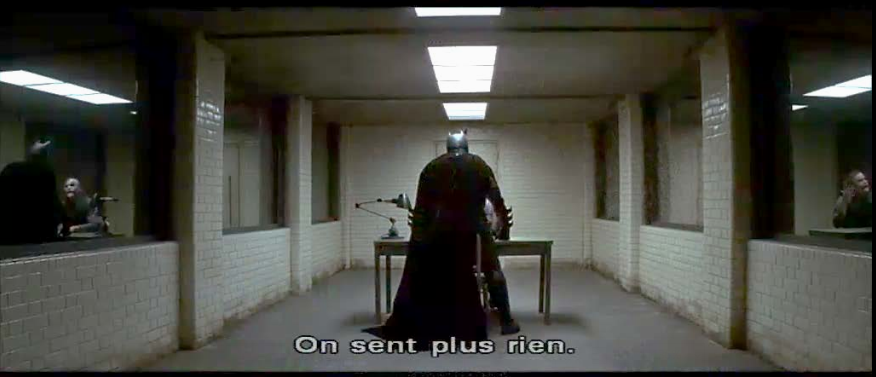
Le face-à-face entre Batman et le Joker dans « The Dark Knight »
Cet effet de superposition est dû à la transgression de la règle des 180° : il y a par conséquence un effet de confusion entre les personnages. On ne voit pas qui parle, comment il parle, ni comment réagit son interlocuteur. Le discours filmique est un langage : quand on brise des règles, ça devient des styles artistiques particuliers. La règle des 180° n’éclate pas complétement ici, mais Nolan introduit une confusion volontaire.
La Nouvelle Vague déconstruit le cinéma classique, et donc aussi cette règle des 180°. Les théoriciens de la Nouvelle Vague française veulent se séparer du genre du cinéma américain. Examinons un extrait d’A bout de souffle (Jean-Luc Godard, 1960), ainsi que de sa version américaine réalisée par Jim McBride en 1983. On remarque qu’il se passe la même chose dans les deux séquences, mais la façon de montrer est différente :
Dans la version française : il y a 4 plans pour la découverte du pistolet, puis un « faux raccord » car c’est d’abord le personnage qui assume les bruits du pistolet, puis il y a un vrai bruit de fusillade. Là, on ne sait pas où est le pistolet car il y a une ellipse. Dans la course-poursuite il y a des sautes, des problèmes de raccord. On voit que le personnage est exprès allé chercher le pistolet dans sa voiture dans le but de tuer le policier : c’est presque eisensteinien, car l’action est mise en place par le montage de raccord.
Dans la version américaine : c’est le personnage qui fait les bruits de pistolet mais nous le voyons faire ces bruits (contrairement à la version française), puis il le lance sur le siège d’à côté. Il y a un plan en-dehors de la voiture, qui est symbolique de l’ellipse que l’on trouvait dans le film de Godard. Le spectateur voit le policier avant le personnage. Tout est fait pour disculper le héros : il va « simplement » chercher sa veste quand le policier arrive, tandis que dans la version française il n’y a aucun doute sur la nature de l’action du héros. Ça montre bien une différence entre le cinéma américain, qui dresse ses personnages en héros malgré tout, et le cinéma français, qui déconstruit cette figure de héros.
Beaucoup de critiques se sont montrés durs avec Godard, disant que ses films n’étaient pas propres ni bien finis car on y remarque un certain nombre de fautes et de faux raccords. Godard se défend, il revendique une esthétique des faux raccords. Il admire Eisenstein et il se base sur lui et sur toute l’histoire cinématographique pour justifier le jump-cut qu'il utilise dans ses films.
Le raccord déjoué, dans la scène dans la danse des Carabiniers, est un raccord de mouvement car le geste est répété et donc discontinu. Godard change la définition du bon raccord : il dit que le raccord est le passage d’un plan à un autre et dit qu’il n’y a pas de faux raccord. Le réalisateur aborde ainsi un paradigme musical, car le montage est un procédé rythmique, et un paradigme langagier. Godard rend ainsi hommage au film Le cuirassé Potemkine lorsque la fille, sur le point d’être fusillée, crie « Frères ! », exactement comme le marin au moment de la mutinerie dans le film d’Eisenstein.
Un film important : Chantons sous la pluie (Singin’ in the Rain, Stanley Donen & Gene Kelly, 1952)
C’est la comédie musicale la plus connue de l’histoire du cinéma. Ce film parle d’ailleurs de cinéma, il y a beaucoup de mises en abyme dedans.
Le film est enjoué, mais le tournage a été très difficile. Gene Kelly était un tyran avec tout le monde, surtout avec Debby Reynolds, qui ne dansait pas assez bien à son goût, et qui a fini en larmes plusieurs fois. C’est finalement avec Fred Astaire qu’elle prendra des cours de danse. Donald O'Connor a du prendre des jours de repos après le tournage de la séquence de Make 'Em Laugh, tandis que Kelly était fiévreux lors de sa séquence sous la pluie.
L’histoire parle de la transition du cinéma muet au cinéma parlant, avec les problèmes que cela a engendré pour toutes les équipes de production.
SynopsisEn 1927, Don Lockwood (Gene Kelly), star du cinéma muet, a pour partenaire Lina Lamont (Jean Hagen), actrice à la voix de crécelle. Ils sont engagés tous deux par les studios Monumental Pictures. Don est toujours accompagné de son partenaire du temps de ses débuts au vaudeville, Cosmo Brown (Donald O'Connor).
Les jours du cinéma muet sont comptés lorsque sort Le Chanteur de jazz, premier film parlant de l'histoire. Les studios décident de tourner le prochain « Lockwood et Lamont », Le Spadassin royal, selon ce nouveau procédé. Mais la voix de Lina est désagréable : elle a une voix nasillarde et un cheveu sur la langue. Cosmo décide de la faire doubler par Kathy Selden (Debbie Reynolds), danseuse à la voix chaleureuse, dont Don tombe amoureux.
Prenons maintenant un extrait de Psychose (Alfred Hitchcock, 1960). Quand la sœur de la victime se trouve dans la maison de Norman Bates et que l’amant retient le meurtrier, il y a une alternance entre deux pistes, celle de la sœur et celle de l'amant : c’est ce qu’on appelle un montage alterné, on suit deux événements en alterné qui vont finalement se rejoindre.
Le montage alterné
Aussi appelé « syntagme alterné » par Christian Metz, le montage alterné se passe au niveau de l’alternance des pistes narratives, de plans. Les deux pistes doivent être plus ou moins alternées : il faut que le spectateur puisse presque placer un « pendant ce temps » entre les deux situations suivies. Ces deux pistes finissent toujours par se rejoindre, ce qui montre qu’elles se déroulaient en même temps. Il peut néanmoins y avoir des coupes dans chaque piste, ça n’entrave pas le montage alterné. Un exemple typique de syntagme alterné serait la situation de poursuivant-poursuivi.
Dans l’extrait de Psychose, il y a une piste intermédiaire qui fait apparaître au spectateur un espace intermédiaire, qui joint les deux pistes. Le montage alterné est intimement lié à une situation de suspense, le spectateur peut voir les deux choses et ça permet d’en savoir plus que les personnages. Dans l’extrait du film d'Hitchcock, Norman dit à Sam, dans une chambre du motel, qu’il a eu une enfance heureuse, et au même moment on voit la sœur de Marion, dans la maison, qui comprend que son enfance n’est pas « finie » en voyant la chambre de Norman.
Le montage parallèle
Aussi appelé « syntagme parallèle » par Metz. Ça lie une séquence avec une seconde piste qui n’a pas de rapport narratif direct avec elle, mais qui a une valeur parallèle symbolique ou allégorique, des motifs récurrents que l'on retrouve dans les deux pistes narratives. On en trouve un exemple dans La Grève (Eisenstein, 1924), quand les ouvriers se font abattre le montage parallèle fait apparaître des veaux à l’abattoir : il n’y a pas de continuité narrative, mais plutôt symbolique. On trouve également une dimension métaphorique dans The Hours, puisque certains motifs reviennent chez les 3 femmes, alors que leurs pistes narratives ne se déroulent pas au même moment.
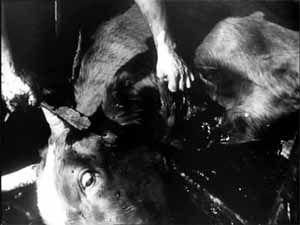
Un insert d'un veau dans « La Grève », entre deux plans sur la fusillade des ouvriers
Le montage alternant
Il construit l’alternance entre plusieurs pistes narratives, qui ne sont pas simultanées mais qui ont un lien narratif entre elles et que le spectateur découvre en général plus tard dans le film (comme des flash back par exemple).
Le syntagme en accolade
Il s'agit d'une série de brèves scènes représentant des événements que le film donne comme échantillon d’un même ordre de réalités, en s’abstenant délibérément de les situer les unes part rapport aux autres dans le temps pour insister au contraire sur leur parenté supposé au sein d’une catégorie de faits, que le cinéaste a précisément pour but de définir et de rendre sensible par des moyens visuels.
C’est leur ensemble, et non chacune d’entres elles, qui est pris en compte par le film et qui est commutable avec une séquence plus ordinaire. Cela constitue donc un segment autonome.
Christian Metz
C’est un grand nom de la théorie du cinéma. Metz a créé une échelle du montage, la Grande Syntagmatique. Il parle également de syntagmes. Quelques informations sur lui :
En 1968, Metz écrit un ouvrage sur la sémiologie au cinéma. Son livre recueille ses essais sur la signification au cinéma. C’est le premier stade de Metz.
En 1977, il écrit un ouvrage sur la psychanalyse au cinéma (comment le film est construit, ainsi que la réception par le spectateur). C’est le deuxième stade de Metz.
En 1991, Metz écrit un livre sur l’énonciation au cinéma. Selon lui, le film serait issu d’un discours, c’est le résultat d’une énonciation. C’est le troisième stade de Metz.
La sémiologie
Elle est issue de la linguistique structurelle (c’est le linguiste Ferdinand de Saussure qui a mis en avant ce terme). Les sémiologues déconstruisent les choses, ils cherchent les structures de ce qui nous entoure. Mais ils peuvent également appliquer les outils de la sémiologie à autre chose que le langage verbal, comme le cinéma par exemple.
Roland Barthes a été l’un des premiers sémiologues à avoir appliqué cette manière de penser à tout (la nourriture, la littérature, etc). On essaie donc de trouver dans le visuel de quoi appliquer la grammaire textuelle. Pour Barthes, la langue est un code organisé alors que le langage est une zone plus vaste qui reste à explorer.
Les formalistes russes pensaient que le cinéma était très poétique, que le « plan » était un mot et que la séquence était une phrase. Mais pour Metz, dans son livre de 1968, c’est abusif de dire ça. Voilà 4 théories qu’il développe dans ce livre :
Les plans sont en nombre fini, contrairement aux mots d’une langue.
Les plans sont des inventions du cinéaste, contrairement aux mots qui préexistent dans un lexique.
Le plan livre au spectateur une quantité d’informations indéfinie, contrairement au mot. De ce point de vue, le plan n’équivaut même pas à une phrase. Exemple : comment décrire complètement un plan de film à l’aide d’une langue naturelle ?
Le plan est une unité actualisée, une unité de discours, une assertion, contrairement au mot (qui est une unité de lexique, purement virtuelle). L’image d’une maison ne veut pas dire « maison » mais « voici une maison ».
La Grande Syntagmatique ne parle que de l’image, pas du son. « Syntagmatique » vient de la linguistique structurale. Un syntagme est une unité de sens.
Schéma de la Grande Syntagmatique de Christian Metz
Il y a 4 questions essentielles qu'il faut se poser pour avancer dans le tableau de Metz :
Est-ce qu'il y a plusieurs plans ou non ? Est-ce qu'il y a du montage ?
Est-ce que nous pouvons déduire avec certitude qu'il n'y a qu'une seule chronologie ou non ? Si oui, est-ce descriptif ou narratif ?
Est-ce qu'il y a plusieurs pistes, ou une seule piste ?
Est ce qu'il y a des ellipses ou non ? Si oui, est-ce que ces ellipses sont régulières ou éparses (est-ce qu'elles enlèvent des bouts de films qui ne nous intéressent pas ou est-ce que les coupures n'amènent rien de plus?) ?
S’il y a des ellipses, ce sont de séquences par épisodes (des plans chronologiques avec des ellipses, qui décrivent une évolution et qui ont une valeur répétitive. Par exemple : la scène du déjeuner dans Citizen Kane, qui montre une évolution au sein du couple), ou des séquences ordinaires.
Prenons un extrait de Flashdance (Adrian Lyne, 1983). Quand le personnage féminin s’entraine sur de la musique, il n’y a qu’une seule piste, on comprend qu’elle s’entraine souvent et il n’y a pas qu’un seul entrainement isolé. Il y a un effet de répétition, on ne peut pas dire que c’est chronologique, car certes il y a un début et une fin fixes, mais à l’intérieur de la séquence, ce n’est pas chronologique.
Les limites de la Grande Syntagmatique
Cette théorie connait une réduction explicite à la bande image (dans le cinéma parlant) et au cinéma de fiction, au cinéma narratif dominant.
De plus, certains critères définitoires de certains types sont peu opérants ou ambigus (notamment le syntagme descriptif). Les inserts ont un statut ambigu, puisqu'ils sont considérés comme des plans autonomes alors qu’ils sont eux même pris dans un syntagme.
Un film important : Psychose (Psycho, Alfred Hitchcock, 1960)
Hitchcock avait la particularité d’être un réalisateur peu commun. Comme il était coutumier d’arriver en retard au cinéma à l’époque, Hitchcock a demandé, lors de la première de Psychose, à ce que la salle soit fermée aux retardataires lors de la projection de son film, et que personne ne puisse sortir de la salle avant la fin.
Considéré aujourd’hui encore comme le maître du suspense et de l’horreur, il opposait le suspense et la surprise qui, selon lui, étaient deux choses diamétralement opposées. Dans Psychose, le réalisateur donne plus d’informations aux spectateurs qu’aux personnages : nous voyons donc la menace avant que les protagonistes ne s’en rendent compte.
Hitchcock a travaillé dans tous les métiers en rapport avec le cinéma avant de devenir réalisateur. Psychose est particulièrement connu aujourd’hui pour sa musique marquante (réalisée avec des instruments à cordes, des sons stridents, etc), si bien qu’elle a été reprise dans d’autres films. Au départ, pour la scène du meurtre sous la douche, Hitchcock ne voulait pas de bruit : il voulait que la scène soit tournée dans le silence le plus total. Mais son compositeur a réussi à le faire changer d’avis en proposant cette musique angoissante que nous connaissons tous.
Fun fact : Hitchcock a fait des apparitions, des caméos, dans pratiquement tous ses films.
SynopsisMarion Crane, une secrétaire qui s’ennuie (Janet Leigh), ne supporte plus de ne voir son amant que lors de rencontres furtives à l’hôtel. Un jour, Marion assiste à une transaction entre un riche client et son patron, qui la charge de déposer 40'000 dollars à la banque. Mais au lieu de ça, la jeune femme quitte la ville avec l’argent pour rejoindre son amant.
À la tombée du jour, un orage s’abat sur la route et elle décide de s’arrêter dans un motel tenu par Norman Bates (Anthony Perkins). Étant la seule cliente, Marion passe du temps avec Norman, qui lui dit qu’il vit avec sa mère qui est « malade ». Une fois seule, la jeune femme prend une douche mais elle s’y fera sauvagement assassiner. Quelques jours plus tard, Lila (Vera Miles) et Sam (John Gavin), la sœur et l’amant de Marion, ainsi que le détective Arbogast (Martin Balsam) se lancent à sa recherche. Leurs investigations les mènent au motel des Bates, où ils seront amenés à faire une macabre découverte…
Même si le cinéma est un art avant tout visuel, il faut néanmoins prêter une grande attention au sons. Prenons un extrait de Monty Python : Sacré Graal ! (Terry Gilliam et Terry Jones, 1975). Lorsque les chevaliers s’avancent vers la forteresse, il y a un détournement du code du bruitage avec la noix de coco qui imite le galop du cheval. Le code doit rester inconscient pour le spectateur, mais dans cet extrait il est montré (de manière diégétique), puisqu’on voit les noix de coco qui servent au bruitage. C’est propre aux films comiques que de parodier les formes et les codes sérieux.
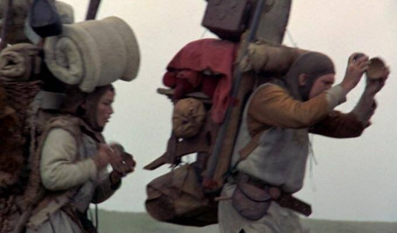
« Sacré Graal ! » détourne le bruitage dans un but comique, comme dans cet extrait
Bruiter les films se fait depuis les premiers temps du cinéma. En 1896 apparait le « tableau animé et parlé » des frères Lumière, grâce à un bonimenteur (c’était le présentateur des premiers films, il les accompagnait avec sa voix). Il y avait plusieurs types de bonimenteur, et donc plusieurs manières de commenter un film :
La voix-narration : c'est la voix du romancier qui raconte l'histoire de manière sérieuse. Cette voix était le format traditionnel du cinéma muet;
La voix-action : le bonimenteur prête sa voix aux personnages pour faire les dialogues, c'est l'ancêtre du doublage;
La voix-attraction : c'est une voix qui va interpeller le public, qui rend le film attractif (le bonimenteur peut faire des commentaires comme « Hé ben, le décorateur s'est surpassé ! » par exemple, ou il peut faire les bruitages : cheval au galop, porte qui grince, etc);
La voix-explication : ici, le bonimenteur accompagne les films documentaires et il explique le discours du film, ce que le réalisateur a voulu transmettre.
Les commentaires étaient donc différents. Le bonimenteur complète le film et refait les dialogues (imitation des voix), il explique le film (conférencier), rend le film plus attractif (il peut faire des commentaires personnels, demander son avis au public, faire des blagues, etc). Ces commentaires oscillent entre la narration et l’attraction.
L’hypothèse d’Alain Boillat, professeur en section d’histoire et esthétique du cinéma à l’université de Lausanne : la voix-over du cinéma actuel est dans la lignée du bonimenteur des premiers temps (c’est un phénomène de résonnance). Cinéma parlé vs parlant : les deux sont liés. Le « parlé » est propre au cinéma des premiers temps, car cela démontre la présence d’un bonimenteur, tandis que le « parlant » est propre au cinéma moderne et démontre que les vois que l'on entend sont à l'intérieur du dispositif filmique.
Aujourd'hui, il y a 3 types de voix au cinéma :
La voix in : c'est la voix la moins déliée, celle qui a le plus de rapport avec la scène que l'on voit à l'écran. Parfois, elle peut être un peu plus déliée, comme dans les films d'horreur par exemple.
La voix off : c'est une voix hors-champ, dont la source n'est pas visible à l'écran mais qui existe néanmoins dans le monde diégétique de l'histoire.
La voix over : c'est la voix la plus déliée car elle est totalement hors-champ, et presque totalement extradiégétique.
Les bruiteurs (foley artists)
Ils ont tout un stock d’objets pour faire du bruit. Par exemple : une bouteille en plastique pour imiter une maison qui craque, du riz dans un sac en tissu pour imiter des pas dans la neige, un gant en plastique remplit de produit vaisselle pour imiter des viscères, etc.
Prenons un extrait de Gladiator (Ridley Scott, 1999). Le bruiteur doit faire tous les bruits du cheval au galop séparément : d’abord le bruit du galop, puis le bruit de fer, et la respiration du cheval. Le numérique assemble ensuite les différents bruits ensemble. C’est compliqué d’enregistrer le son d’un cheval directement sur la bête, car suivant où le micro est placé, on entendra trop certains sons et pas assez d’autres. On va parfois jusqu’à créer des sons qui n’existaient pas
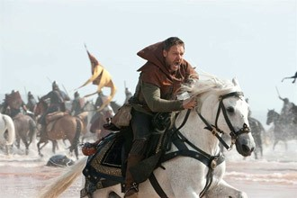
Extrait de « Gladiator »
Michel Chion, l’un des plus grands théoriciens du son français, explique que la convention du bruit prend souvent le pas sur la réalité. Les ingénieurs du son créent un imaginaire qui nous parait plus vrai que la réalité. Par exemple, dans la saga Star Wars, les sons sont synthétisés, ils n’existent que dans ce monde (par exemple dans notre monde, il n’y a pas d’air dans l’espace, et donc pas de bruit. Dans le film, on entend les bruits d’explosions). Gravity (Alfonso Cuarón, 2013) est un film très silencieux, et donc très réaliste, mais c’est une donnée : c’est important de pouvoir remarquer qu’il y a du silence. Dans Star Wars, il y a une entorse au référent réel. La respiration de Dark Vador n’existe que dans ce monde, ça mécanise le bruit et l’idée de déshumanisation du personnage. Le son des sabres est hyper filmique : c’est une combinaison de plusieurs bruits (moteur de voiture, « neige » de télévision, etc).
Prenons un extrait du T-Rex de Jurassic Park (Steven Spielberg, 1993). Puisque nous n’avons pas de référence du cri du dinosaure (car pas de traces orales ou écrites), les ingénieurs ont utilisé des sons d’animaux pour créer le bruit du T-Rex. Nous pouvons mentionner les sons d’un bébé éléphant, d’un alligator, du rugissement d’un lion, et pour sa respiration, ils ont pris le bruit d’une baleine :
Prenons un autre extrait, tiré cette fois de King Kong (Merian Caldwell Cooper, 1933). Pour réaliser le rugissement du singe, les ingénieurs ont utilisé une combinaison entre le rugissement du lion et celui du tigre, qu’ils ont ensuite passé en arrière et plus lentement. On joue ici sur la mécanicité du son. Le cri de la femme est important (c’est d’ailleurs un élément-clé des films d’horreur), car c’est le cri de la victime.
Le cri de Wilhelm
À la base, c’était le cri d’un homme qui se fait attaquer par un alligator dans un vieux film, mais c’est devenu au fil du temps un gag. Les réalisateurs se défiaient entre eux de mettre un cri de Wilhelm dans leur film, si bien qu’on peut l’entendre dans plus de 250 films, dont des films de grands réalisateurs comme Quentin Tarantino ou Steven Spielberg, ainsi que dans des séries et certains jeux vidéo, comme dans Red Dead Redemption (Rockstar Games, 2010).
Image tirée du jeu vidéo « Red Dead Redemption »
Prenons l’extrait d’un film intéressant pour le son : Tarzan, l’homme singe (Woodbridge Strong Van Dyke II, 1932). C’est la première fois qu’on entend son fameux cri, qui n’existe que là. On pense que c’est un bruit qui oscille entre un ténor, un baryton et un porc, même si les acteurs et l’équipe de production ont toujours soutenu que c’était l’acteur lui-même qui avait poussé ce cri. Dans tous les Tarzan qui ont suivis ce film, on entend ce même cri (on l’a réutilisé au moins jusqu’en 1960). Les réalisateurs jouent à remettre le cri original de 1932 et à le remixer.
Les catégories de sons au cinéma
Il y en a trois : le bruit, la voix et la musique. La déliaison intervient, puisque le son et les images ont été enregistrés sur des appareils différents. Pour ce qui est de la voix, la voix in et la voix over son chacun à un bout de la déliaison, et la voix off se situe au milieu. Le premier principe du cinéma concernant le son et qu’il y a différents degrés de déliaison, comme démontré ici :
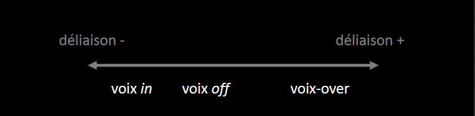
Schéma de la déliaison au cinéma
Le cinéma est dominé par un deuxième principe théorique : le vococentrisme, qui est la prédominance de la voix dans le médium sonore du cinéma. Le cinéma va porter l’attention du spectateur sur la voix, car elle est le support de la parole (qui amène le sens). Il y aurait donc un primat des dialogues et du sens.
Prenons un extrait de Sixième sens (M. Night Shyamalan, 1999). Le son et le visuel sont dissociés : on est proche de certains personnages mais on ne les entend pas, et on n’arrive pas tout de suite à identifier les personnages qui parlent. Le jeu de la sélection sonore se fait à un autre niveau que la sélection visuelle.
Un film important : Fantasia (prod. Walt Disney, 1940)
C’est un film d’animation, nous devons donc faire attention au travail sonore : ici, c’est une vraie symphonie visuelle. Ce n’est pas un film totalement abstrait : le début uniquement l’est. Ce film avait une grande ambition pour la musique classique, il l’a popularisée.
SynopsisLe film est composé de sept séquences illustrant huit morceaux de musique classique, réorchestrés et dirigés par le chef d'orchestre Leopold Stokowski à la tête de l'Orchestre de Philadelphie. La dernière séquence illustre deux morceaux et un intermède sépare la séquence 4 et 5. Chaque séquence est précédée d'une courte introduction où l'orchestre est en ombre chinoise.
Le film, après l'apparition du titre, débute immédiatement comme dans une salle de spectacle : un rideau s'ouvre sur une scène dans la pénombre, les silhouettes de musiciens qui s'installent se découpent sur un écran bleu, avec des bruits d'instruments qui s'accordent. Le narrateur, comme pour une retransmission, accueille les spectateurs. Tandis qu'il explique au public qu'il existe trois genres de musiques, certains instruments sont éclairés, et leur sonorité mise en avant. Les trois genres sont la musique narrative, qui raconte une histoire, l’illustrative, qui évoque une ou des images, et la musique absolue, qui n'existe que pour elle-même.
Il y a trois matières de l’expression au cinéma : le bruit, la paroles et la musique. La voix peut se faire musique ou bruit : mais la question de la source est importante. Il y a 3 types de voix au cinéma : voix in, voix off et voix over. Chacune a un degré différent de déliaison, comme le montrait le schéma que nous avons vu précédemment.
Selon Alain Boillat, les catégories sont liées entre elles. Ce sont trois degrés différents d’un même principe : la déliaison. La déliaison fondamentale est une déliaison générale entre le son et l’image. C’est une déliaison technique car il y a une dissociation technique entre le visuel et d’audio. Le cinéma a toujours séparé ces deux choses. Le synchronisme n’est pas naturel au cinéma, c’est le fruit d’un effort technique énorme. Le cinéma est une tentative de lier les deux. On a fait plus ou moins d’efforts avec le temps pour synchroniser son et image.
La voix in : c’est le pôle mineur de la déliaison, on en voit la source et elle tend au synchronisme et à la déliaison minimale. La voix over : c’est le pôle majeur de la déliaison, mais elle n’est pas totalement déliée, ni totalement extra diégétique. Pour Boillat, la déliaison a 2 niveaux :
Intégration de premier niveau : c’est une liaison technique. Quand on regarde un film, on est sensible à l’image ET au son. Un film est une liaison des deux. Une voix over va être collée au film, c’est donc un lien technique.
Coréférence verbo-iconique : c’est ce que dit la voix over se rapportant à l’image, il y a un lien thématique.
La voix over est une sorte d’échelle, certaines voix over sont plus déliées que d’autres. Il y a des cas de figure de voix over associées à un personnage visualisé comme dans Stranger than fiction (Mark Foster, 2006) : ici, la voix over entre dans la diégèse. On rend ridicule les conventions cinématographiques du narrateur omniscient.
La musique
La question de la source est importante. La musique peut être extradiégétique ou intradiégétique.
Prenons l’exemple du film Les lumières de la ville (Charlie Chaplin, 1931). C’est un film muet, qui revendique son caractère silencieux, mais c’est aussi un film sonore. Dans l’extrait du début du film, le bruitage de la voix qui devient un bruit diégétique, c’est une voix-attraction sans paroles. L’ironie est accentuée par le bruitage (blabla inutile). Nous pouvons numéroter les sons qui apparaissent :
Premier son : des trompettes, qui peuvent être intra ou extradiégétiques;
Deuxième son : de la musique après les trompettes, le violon est extradiégétique. On ne voit pas la source, c’est une musique d’accompagnement de la scène, son but est de rythmer la séquence;
Troisième son : discours caricaturé de la voix, c’est intradiégétique;
Quatrième son : des trompettes. C’est ambivalent mais comme c’est le moment officiel de la scène, on peut dire que ce son est intradiégétique;
Cinquième son : musique de transition à la découverte de Charlot. C’est extradiégétique car c’est un son utilisé pour la présentation du personnage;
Sixième son : l’hymne national. C’est diégétique car les personnages réagissent à cette musique;
Septième son : bruitage des cris de la foule. On entend le public qui rit quand Charlot s’assoit sur le visage de la statue. Ce sont des rires diégétiques mais un peu extradiégétiques car c’est caricaturé. On peut penser que le public est outré, mais par la manière dont le son est traité, ce sont des rires.
Underscoring (ou musique empathique)
L’underscoring, ou la musique empathique, est un « effet par lequel la musique adhère, ou semble adhérer, au sentiment dégagé par la scène, et en particulier au sentiment supposé être ressenti par certains personnages » (selon Michel Chion). Il s’agit d’une musique en adhésion avec l’image, sans pour autant que ce soit du mickeymousing. Prenons l’exemple de Titanic (James Cameron, 1997) : lorsque Jack et Rose sont à l’avant du bateau, la musique semble adhérer au sentiment que le spectateur doit ressentir à ce moment.
Un exemple de musique empathique tiré de « Titanic »
Musique anhempathique (ou contrepoint musical)
Selon Hanns Eisler, la musique contrepoint fait ressortir le sens de la scène en se mettant elle-même en contraste avec les faits apparents. Ça dénonce les usages classiques de la musique de films. Eisler cherche à faire le contraste avec la scène.
Pour illustrer cela, prenons un extrait de Rome, ville ouverte (R. Rossellini, 1945). L’image invite à la mélancolie mais la musique est rapide et incisive. Le contraste musique-montage sans ornements provoque un choc, qui suscite plus la révolte que l’abandon sentimental : or, selon les images, c’est cet abandon qui devrait être appelé chez le spectateur. Prenons un nouvel exemple, tiré cette fois de La passion du Christ (Mel Gibson, 2004). La musique qui accompagne la flagellation est tendre, triste. Sa douceur crée une distance par rapport à la brutalité de l’événement, comme nous pouvons le voir ci-dessous :
Le contrepoint selon Eisenstein, Poudovkine et Alexandrov (1928)
Selon ces trois théoriciens du cinéma, seule l'utilisation du son en guise de contrepoint vis-à-vis d'un morceau de montage visuel offre de nouvelles possibilités de développer et de perfectionner le montage. Les premières expériences avec le son doivent être dirigées vers sa « non-coïncidence » avec les images visuelles. Cette méthode d'attaque seule produira la sensation recherchée qui conduira, avec le temps, à la création d'un nouveau contrepoint orchestral d'images visions et d'images-sons.
Un film important : Playtime (Jacques Tati, 1967)
Une ville entière a été créée exprès pour ce film. Le cadrage est au maximum de l’échelle large (au contraire de La passion de Jeanne d’Arc, où il n’y avait pratiquement que des gros plans), ce qui permet de tout montrer et de laisser vagabonder le regard du spectateur : c’est le son qui guide le regard sur l’écran. Les bruits remplacent donc la parole, le film ne suit pas le vococentrisme. Les sons sont très artificiels. Tati se monte dans ce film contre le capitalisme. Le son est un substitut du langage, mais il n’y a presque pas de paroles.
SynopsisLe film est organisé en six séquences, reliées entre elles grâce à deux personnages qui se croiseront au cours du récit : Barbara (Barbara Dennek), une touriste américaine en visite à Paris, et M. Hulot (Jacques Tati), qui a un rendez-vous avec un personnage important. Les séquences sont les suivantes :
L'aéroport : un groupe de touristes américaines arrive à Orly et découvre un Paris futuriste ;
Les bureaux : M. Hulot attend son rendez-vous, mais il se perd dans les bureaux et finit par se retrouver dans une exposition ;
L'exposition : M. Hulot et les touristes découvrent de nouvelles inventions ;
Les appartements : à la nuit tombée, M. Hulot rencontre un camarade de régiment qui l'invite dans son appartement ultramoderne ;
Le Royal Garden : M. Hulot, après avoir échappé à son ami, se retrouve, grâce à un autre camarade, à l'inauguration du restaurant Royal Garden en compagnie des touristes. Les travaux sont à peine finis mais le club connaît des problèmes de rodage, les clients essuyant les plâtres. Au matin, quelques rescapés de la folle nuit, se retrouvent dans un drugstore, où des ouvriers viennent prendre leur café ;
Le carrousel des voitures : la ville se remet au travail, et le car des touristes américaines reprend la route de l'aéroport. À son bord, Barbara découvre le cadeau souvenir que lui a fait parvenir M. Hulot.
Le son au cinéma, et plus précisément la voix, connait différentes variations et différents effets. En voici quelques-uns :
L'acousmatisation : C'est lorsque la voix in devient une voix over, par un personnage délégué par exemple (exemple : dans Charlie et la chocolaterie (Tim Burton, 2005), lorsque le grand-père de Charlie lui raconte son travail dans la fabrique de Willy Wonka, le début de la séquence est en voix in, puis nous basculons en voix over lorsque nous voyons des images du passé, mais que le grand-père continue de raconter).
L'indétermination de l'ancrage diégétique : c'est lorsqu'on ne voit pas la bouche qui parle, et que nous hésitons entre la voix off ou la voix over.
Le dédoublement : la voix over et la voix du personnage visualisé ne sont pas les mêmes (exemple : quelqu’un parle anglais, et par-dessus on entend une autre voix dans une autre langue, comme dans les documentaires).
La dissociation : c’est un problème de contenu entre la voix over et ce qu’on voit (la voix ne parle pas de ce qu’on voit à l’écran, exemple : on voit un paysage, et la voix parle d’un couple et de ses problèmes).
Le placage : c’est l’élément le moins délié. On plaque une voix over sur un personnage visualisé à l’écran et le résultat marche (exemple : le monologue intérieur que se fait le personnage d’Edward Norton dans Fight Club).
Le doublage : des voix différentes (des voix over) sont collées aux lèvres du personnage pour mimer.
Ces règles sur le son sont valables dans pratiquement tous les genres, mais nous pouvons nous poser encore une question à propos d'un genre particulier : dans les comédies musicales, les moments chantés sont-ils diégétiques ? Parfois, nous pouvons penser qu’ils le sont, et parfois ce qui entoure la musique nous permet de savoir que non, comme c’est le cas dans La La Land (Damien Chazelle, 2016). Dans la plupart des scènes chantées de ce film, les règles du réalisme sont déjouées, par exemple les acteurs s’envolent pour danser dans les étoiles. Ceci nous permet de comprendre que les moments chantés ne se déroulent pas dans la diégèse du film.
L’expert des comédies musicales : Bollywood
Pour en parler, prenons un extrait d’un film bollywoodien : Mohabbatein (Aditya Chopra, 2000), dont nous voyons une image ci-dessous. La scène principale est un numéro totalement diégétique, qui s’inscrit dans la continuité du film, chanté en hindi.
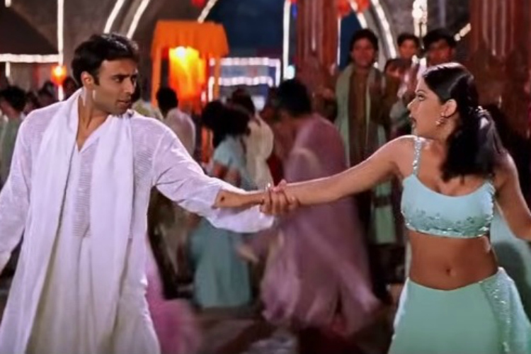
Les productions bollywoodiennes, comme ici « Mohabbatein », peuvent nous sembler atypiques au premier abord
Prenons un autre extrait du film, qui a été tourné à Berne. Ce film fut un gros succès en Inde et en Asie en général, surtout à cause du saut de la réalité, car soudain on se retrouve en Suisse. C’est ici un numéro extra diégétique (comme un rêve, il n’y a pas d’implication dans la trame narrative de l’histoire). Le doublage est réussi.
Pour Tom Gunning, professeur de cinéma au Department of Art History de l'Université de Chicago, le cinéma d’attraction ne disparait pas avec la période de domination du récit, mais il deviendrait plutôt souterrain à compter de ce moment-là, intégrant à la fois certaines pratiques d’avant-garde et certains films narratifs, de façon plus évidente dans certains genres (la comédie musicale par exemple) que dans d’autres. Rick Altman, professeur de cinéma et de littérature comparée à l’université d’Iowa, parle d’effet de « fondu sonore » (un moment où on arrête et/ou recommence la chanson). Le son diégétique passe à de la musique.
Mais ces pratiques particulières concernant le son ne sont pas le propres du cinéma bollywoodien. Prenons un extrait de Bande à part (Jean-Luc Godard, 1964). Dans la scène de la danse dans le bar, il y a un vococentrisme contourné car le bruit du bar prend le dessus sur la voix des personnages. Le silence est extra-diégétique car même la structure filmique est silencieuse. Ici, Godard montre toutes les couches sonores du film, il déconstruit les conventions.
Concernant le son, quelques notions sont importantes d’être rappelées :
L’underscoring (ou musique empathique) : cela consiste à accompagner une séquence avec une musique qui s’accorde et qui accentue l’émotion de la scène. C’est elle qui donne le ton, l’ambiance générale de la séquence, mais elle doit demeurer inconsciente au spectateur.
Le contrepoint (ou musique anempathique) : il s’agit du principe d’associer à une séquence une musique qui vient en contrarier les connotations, qui n’imite pas les événements montrés et l’ambiance visuelle mais qui, au contraire, produit des effets de contraste.
Le mickeymousing : lorsque la musique s’accorde parfaitement avec les gestes des personnages (par exemple, lorsque la musique suit parfaitement les gestes des personnages dans les dessins animés).
Le raccord sonore : il s'agit de l'aménagement d'une continuité sonore intradiégétique entre deux plans. Ceci permet d'installer une continuité, comme par exemple s'il y a un plan dans une discothèque avec une certaine musique, et le plan suivant à l'extérieur avec la même musique : ça permet de comprendre que ces deux plans se suivent.
Le chevauchement sonore : c'est le principe de faire déborder le son d'une séquence sur une autre. Ce procédé permet de créer un décalage entre la coupe visuelle et la coupe sonore. Par exemple, on peut entendre un début de dialogue avant même d'avoir quitté visuellement la séquence précédente.
Le pont sonore : ce terme permet d'englober toute construction d'une continuité sonore entre plusieurs plans, ce qui permet d'atténuer les coupes visuelles.
La rupture (ou saute) sonore : c'est un brusque changement de musique, de rendu sonore ou d'ambiance.
Le leitmotiv : c’est un thème musical qui se répète dans le film, et qui est associé à un personnage, une idée, un lieu, un sentiment, etc. C’est très utilisé dans les sagas et les séries, comme par exemple la musique des orcs dans Le Seigneur des Anneaux, ou la musique jouée à chaque apparition de Dark Vador dans Star Wars. Parfois, il peut y avoir des leitmotiv diégétisés, comme par exemple le sifflement du tueur dans M le maudit.
C’est à ce dernier élément que nous allons maintenant nous intéresser plus en détail. Dans In the mood for love, il y a un leitmotiv (Yumeji’s theme) que le spectateur va retrouver à chaque fois que les deux protagonistes vont se croiser. Le montage sonore et la construction des musiques sont pensés avec la notion de leitmotiv. Il y a un enjeu de forme. Le leitmotiv, dans ce film, est associé à un ralenti, qui magnifie le mouvement gracieux, comme dans une danse. Le dernier theme du film est retravaillé pour montrer que ça fait maintenant parti du passé. Voici un exemple du leitmotiv de In the mood for love, lorsque Mme Chan (la femme avec la robe à motifs) se lève pour laisser passer M. Chow :
Le son, en plus des quelques notions vues précédemment, comprend également différentes distributions au cinéma :
Monophonique : une seule piste sonore, une seule source sonore derrière l’écran (même s’il y a plusieurs haut-parleurs qui diffusent une piste, leur emplacement est derrière l’écran). C’est un format 4/3.
Stéréophonique : c’est une latéralisation des perceptions gauche-droite, comme les écouteurs (exemple : Fantasia a 9 bandes sonores, et pleins de haut-parleurs placés à gauche et à droite). Il y a un élargissement de l’écran, et donc également de la source sonore. Parfois, cela amène des problèmes d’interférence, de cohérence.
Dolby stéréo : nous avons ici deux sons latéraux (gauche et droite), mais également un central. La troisième source sert de diffusion ambiante, on joue sur les effets (elle est disposée en général derrière le spectateur pour faciliter son entrée dans l’ambiance). Un exemple de cela se trouve dans Orange Mecanique (Stanley Kubrick, 1971), où le son est compressé sur une piste optique.
Quintaphonique (5.1) : il y a des sources à gauche et à droite, une modulation centrale mais aussi deux derrière le public, à gauche, à droite et un caisson de basse.
Pour prendre un exemple, prenons Apocalypse Now (Francis Ford Coppola, 1979). Il y a trois modes de distribution dominants : monophonique, stéréophonique et quintaphonique. Les hélicoptères se déplacent de manière circulaire, ce qui donne plus de liberté de mouvement et permet de faire le lien avec la technique surround, qui permet d'avoir une musique englobante. Le surround utilise 3 voies : mono arrière, canaux frontaux pour latéraliser la bande sonore, et une enceinte au fond de la salle. C'est ce qui donne cette musique immersive et qui permet, dans l'extrait ci-dessous, d'entendre à la fois le bruit des hélicoptères et La chevauchée des Valkyries, et c'est ce qui donne au spectateur une impression d'immersion dans l'action du film :
Un film important : In the mood for love (花樣年華, Wong Kar Wai, 2000)
C’est un film sur le secret, qui est traduit par un grand jeu sur le hors champ. La musique est de Shigeru Umebayashi. Il est beaucoup question du leitmotiv dans ce film.
SynosisL’action se déroule en 1962 à Hong Jong. M. Chow (Tony Leung Chiu-wai), rédacteur en chef d'un journal, et Mme Chan (Maggie Cheung), emménagent avec leurs conjoints, le même jour, dans des appartements voisins. La femme de M. Chow est souvent absente et le mari de Mme Chan est fréquemment à l'étranger. Très vite, ils vont comprendre que leurs conjoints respectifs entretiennent une relation amoureuse adultère en secret. Ensemble, M. Chow et Mme Chan vont tenter de saisir les éléments de la rencontre des deux amants et surtout la façon dont est né cet adultère. Mais l'amitié débouche rapidement sur d'autres sentiments.
Pour reprendre la question du son, prenons un extrait de Sauve qui peut (la vie) (Godard, 1979). Le code classique est ici déconstruit, on montre la source d’un son extradiégétique (c’est une désaccousmatisation, on passe d’un son over à un son in). Il y a une musique différente avant de voir l’orchestre et après l’avoir vu.
La structure d’un film doit être narrative : le film est un récit, et il y a des règles de construction du récit. C’est un parallèle fait avec la littérature, car ces règles existent aussi dans d’autres domaines, comme les livres. La narratologie est la science du récit, c’est le stade après la sémiologie, qui est l'étude des signes. Le langage donné au cinéma est, et doit être, narratif.
La narration
C’est le fait de raconter des histoires. L’être humain est narrateur de nature, c’est son propre de conceptualiser des choses par le récit. Nous concevons notre vie comme une histoire. La vie serait envisagée comme un destin, un récit, que ce soit des prévisions ou des souvenirs. Les histoires sont des modèles pour penser notre propre vie, raconter est une « fonction biologique » (selon Umberto Eco).
Michael Gazzaniga, un neuroscientifique, confirme l’expérience de Jung que l’inconscient non seulement parle, mais surtout qu’il interprète nos actions. Selon lui, les personnes qui ont les deux hémisphères du cerveau séparées sont conscientes uniquement de ce qui se passe dans le cerveau gauche (la conscience). Le sujet ne perçoit que ce qui se passe à sa droite. Dans une de ses expériences, l’analyste demande au sujet qui a les deux hémisphères séparées pourquoi il prend tel objet qui se trouve à sa gauche : le subconscient du patient invente une histoire logique. Pour illustrer cette expérience, prenons un extrait de Dr House. House parle d'un interprète dans l’hémisphère gauche, car le patient reconstruit une histoire logique. Raconter une histoire serait donc une fonction biologique de notre cerveau.
Définition du récit
Voici le schéma actanciel selon Algirdas Greimas, linguiste et sémioticien. Pour lui, le récit se définit comme une relation entre action et actant :
Le récit selon Greimas
Selon Jean-Michel Adam, la séquence narrative se construit autrement : il y a une situation initiale, une situation finale et des déclencheurs, des actions, des complications entre ces deux stades. Il faut passer par l’organisation des événements et de la temporalité pour raconter une histoire. Il faut remonter à l’Antiquité grecque et à Aristote, et passer par les 3 étapes (le début, le milieu et la fin). Le récit réorganise les événements de manière signifiante entre un début et une fin. C’est un travail de sélection des faits.
L’apport spécifique des récits, lorsqu'ils capturent la temporalité inhérente aux actions humaines, c'est de la configurer, de la mettre en intrigue. Les récits, en effet, ne se contentent pas de recueillir les faits : nécessairement, ils les agencent, ils les mettent sous tension entre un début et une fin, transformant ainsi la simple succession des événements en une totalité signifiante. À cela il faut ajouter que les récits ne recueillent pas tous les faits ; d'ailleurs, s'ils le faisaient (et à supposer que cela soit possible), ne tomberaient-ils pas dans une sorte d'insignifiance ? C'est donc bien parce que les récits sont sélectifs qu'ils mettent de l'ordre dans la temporalité humaine. Le récit schématise, trace une piste dans le fouillis inextricable des agissements humains, simplifie ce qui est embrouillé, propose des itinéraires fléchés. Le temps devient temps humain dans la mesure où il est articulé sur un mode narratif ; en retour, le récit est significatif dans la mesure où il dessine les traits de l’expérience temporelle.
Outils théoriques pour l’analyse
Prenons maintenant un extrait de In the mood for love. En un mouvement, la femme du héros passe entre les amants. Il y a une mise en abyme du film par des mouvements. La musique et le ralenti donnent un effet de dilatation : TR > TH (le temps du récit prend le pas sur temps de l’histoire). C’est basé sur la théorie de Gérard Genette, qui est aux fondements de toute la narratologie. C’est lui qui va distinguer récit et histoire :
Histoire : signifié, contenu narratif, diégèse. C'est une chronologie qu'on reconstitue, un monde qu'on imagine à partir du film.
Récit : signifiant, énoncé, texte narratif. C’est l’acte de raconter, le contenant, les mots dans un texte, les images dans un film, C'est ce qu'on voit à l'écran.
Le récit et l’histoire sont liés, comme le le recto et le verso d’une page, le côté pile et le côté face d’une pièce. La narratologie est fondée sur la relation entre ces éléments. Dans 2001 L’Odyssée de l’espace (Stanley Kubrick, 1968), le récit ne dure que quelques minutes, mais l’histoire racontée par ce récit dure plusieurs millions d’années.
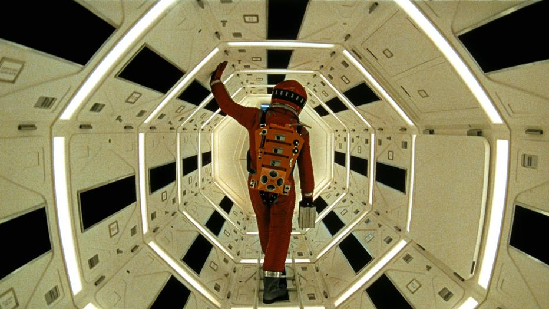
Image tirée du chef-d'oeuvre de Kubrick
Il y a 3 éléments pour comparer le temps de l’histoire et le temps du récit :
La durée (ou la vitesse) : c’est le rapport entre la durée écoulée dans la diégèse/à l’écran ; c’est une question de rythme : « tempo narratif » du film (ralentissement/accélération, etc).
L’ordre : la succession des évènements dans la chronologie diégétique/à l’écran : linéarité, non-linéarité, chevauchements, simultanéité, enchâssements, « flash-back » (analepse), « flashforward » (prolepse), etc.
La fréquence : ce sont les phénomènes de répétition, au niveau de l’événement narré ou de la manière de la narrer.
Un film important : Je t’aime, je t’aime (Alain Resnais, 1968)
C’est un film de science-fiction, avec des questions de temporalité et de voyage dans le temps. Le motif de l’homme qui se téléporte dans le passé permet de donner un effet de répétition et de temps mort. Il y a l’idée qu’on retourne et qu’on répète les mêmes actions et les mêmes paroles en boucle.
SynopsisAprès avoir raté son suicide, l'employé de bureau Claude Ridder (Claude Rich) se voit proposer par des chercheurs de participer à un voyage dans le temps qui n'a, pour l'instant, été testé que sur des souris. Les savants lui affirment qu'il va revivre une minute de son passé, celle située exactement un an plus tôt. Après qu'on lui ait injecté un produit, Claude est placé dans une machine, mais l'expérience tourne mal et il entame un voyage aléatoire, ne parvenant plus à revenir au point zéro.
Analysons un extrait de Still Alice (Wash Westmoreland et Richard Glatzer, 2014). La temporalité est intéressante. Avec l’ellipse, on ne sait pas combien de temps a passé entre deux plans, mais quand on voit les choses en général c’est au présent, au moment où un événement se passe. Mais dès qu’il y a une coupe, on perd la notion du temps : on utilise la temporalité pour traduire la mémoire du personnage, et d'autant plus intéressant lorsque le personnage, comme ici Alice, a des troubles de la mémoire, car cela permet une sorte de jeu avec le spectateur. La coupe de montage et le temps qui se passe montrent que c’est toujours une ellipse (un saut dans le temps).
Plusieurs notions sont à définir, et notamment deux :TR (le temps du récit, c'est-à-dire le temps du visionnement par le spectateur) et TH (le temps de l'histoire, autrement dit le temps relatif aux événements diégétiques). Grâce à ces deux notions, nous pouvons en illustrer plusieurs autres :
La scène : TR = TH (le temps du récit est le même que le temps de l'histoire), par exemple la « scène » chez Metz (raccords ou hiatus) ou le plan-séquence (par exemple dans Birdman).
Le sommaire : TR < TH (le temps du récit est plus court que le temps de l'histoire), par exemple la séquence par épisodes, ou la séquence ordinaire (qui repose sur l’ellipse).
La dilatation : TR > TH (le temps du récit est plus important que le temps de l'histoire). Ce sont les ralentis, les effets de montage (redondance dans l’alternance, etc).
La pause (descriptive) : TRn > TH=0 (le temps du récit est infiniment plus important que le temps de l'histoire). Ce sont des situations-cadres où le(s) narrateur(s) digresse(nt) ou arrête(nt) littéralement l’image. Il peut y avoir un insert explicatif, un insert non-diégétique, ou encore un montage parallèle.
Toute forme de récit est une mise en ordre des événements. On se base sur la théorie de Gaudreault et Jost, qui se basent eux-mêmes sur Genette, qui théorise la narratologie par rapport à la littérature. Gaudreault et Jost prennent les catégories de Genette et les appliquent au cinéma.
La dilatation
TR > TH : le temps de l’histoire est plus court que le temps du récit (par exemple, lors des ralentis, on passe plus de temps à regarder quelque chose que ce qui s’est réellement passé à l’écran). Par exemple, dans In the mood for love, on ressent que les coupes sont des ellipses. Dès que c’est continu, ce sont des raccords et non des ellipses.
Autre exemple : il peut y avoir des répétitions (on revoie une même scène plusieurs fois). Dans un extrait du film Le Labyrinthe de Pan, lors de la scène de la poursuite entre la fillette et le monstre, on peut voir une démultiplication des plans, un montage alterné poursuivant-poursuivi pour montrer de manière successive des choses qui se passent de manière simultanée. Ici, à chaque coupe on revient un peu en arrière, on joue sur un retard des plans dans leur simultanéité.
La pause (descriptive)
L’histoire est arrêtée pour se concentrer sur un détail et raconter des choses sur ce détail. Un exemple se trouve dans Fight Club, lorsque le personnage d’Edward Norton annonce « Laissez-moi vous parler de Tyler Durden » : un plan se passe devant nous, au présent. Dans l’extrait, c’est un arrêt sur image mais la voix over continue, la description se fait avec des images en mouvement et le narrateur est homodiégétique (Edward Norton). C’est comme si on nous montrait ce monde over. C’est typiquement une situation-cadre où le narrateur digresse/arrête l’image.
Prenons un extrait de Lucy (Luc Besson, 2014). Il y a des plans autonomes et des inserts. Un insert est un plan inséré dans une séquence en gardant son autonomie (il fait « tache » en quelque sorte), il échappe au statut ambiant du syntagme. Dans l’extrait tiré du film de Besson, nous en remarquons deux :
La souris : c’est un insert non-diégétique, car ne fait pas partie du monde du film, c’est un message symbolique au spectateur.
Lucy (notre ancêtre) : c’est message du réalisateur aux spectateurs, c’est du montage et donc un syntagme (selon la terminologie de Metz). Ça donne l’effet d’une image vue plusieurs fois. Ces plans sont successifs et n’apparaissent qu’une fois. Si une image apparait en alternance avec la piste narrative (comme le guépard dans l’extrait), c’est un montage parallèle. C’est ici un insert subjectif, car son but est de suggérer quelque chose au spectateur sans le dire explicitement.
Pour illustrer le cas d’un insert diégétique déplacé, prenons l’exemple de la série NCIS : enquêtes spéciales (Donald P. Bellisario et Don McGill, CBS). Lorsque l’on a certaines actions qui se déroulent en noir et blanc pendant quelques instants, il y a un double mouvement, entre l’image arrêtée et le prolepse (on annonce ce qui va se passer) : c’est un prolepse par insert diégétique déplacé, on nous insert quelque chose qui arrive plus tard. Chez Metz, l’insert diégétique déplacé se situe au niveau de l’ordre (suite de séquence), comme le flash-back, la prémonition, le souvenir. On déstructure la chronologie de l’histoire.
Voici les quatre types d’inserts possibles :
L’insert non-diégétique : c’est une image à valeur purement comparative, et présentant un objet extérieur à l’action (le plan sur les vaches à l’abattoir entre deux plans sur les ouvriers dans La Grève par exemple).
L’insert subjectif : c’est une image qui n’est pas visée comme présente, mais visée comme absente, par le héros de l’actions : par exemple, ce sont des souvenirs, des rêveries, des craintes, des prémonitions (les prémonitions de mort des personnages principaux dans la saga Destination finale par exemple).
L’insert diégétique déplacé : c’est une image qui, tout en étant pleinement « réelle », est soustraite à son emplacement filmique normal et postée à dessein en enclave dans un syntagme d’accueil étranger (par exemple, au milieu d’une séquence relative des poursuivants, on pourrait insérer une image unique des poursuivis).
L’insert explicatif : c’est un détail grossi, un effet de loupe. Le motif est soustrait à son espace empirique et porté dans l’espace abstrait d’une intellection : par exemple, des cartes de visite, des missives en gros plans, etc.
Un film important : Mulholland Drive (David Lynch, 2001)
C’est un film compliqué, beaucoup de sites en proposent des explications. Lynch, dans ce film, parle de choses à ressentir, pas à comprendre. Le film serait un monde où il faut s’immerger, une expérience à vivre. Mulholland Drive raconte que quelque chose est raconté, il construit et déconstruit les codes du cinéma. Il raconte que les histoires se racontent, et comment elles se racontent.
SynopsisA Hollywood, durant la nuit, Rita (Laura Harring), une jeune femme, devient amnésique suite à un accident de voiture sur la route de Mulholland Drive. Elle fait la rencontre de Betty Elms (Naomi Watts), une apprentie actrice, qui vient juste de débarquer à Los Angeles. Aidée par celle-ci, Rita tente de retrouver la mémoire ainsi que son identité.
Le récit linéaire, dans tous les domaines, est construit comme tel : début – milieu – fin. Mais peu de récits se déroulent comme ça. Si on ajuste un plan quelque part, c’est un insert diégétique déplacé. Metz donne une grande place à l’ordre.
Les récits du passé sont amenés par un narrateur délégué. Dans la prolepse, c’est un médium qui raconte. Mais il n’y a pas toujours besoin de narrateur : souvent, c’est juste un montage non-linéaire (par exemple, dans Les Heures, on sait dès le début qu’il y a trois pistes narrative entremêlées en montage alternant). Il y a beaucoup d’exemples de montage non-linéaire jouant avec l’indécision de l’ancrage temporel : Pulp Fiction, Trois vies et une seule mort, et plus récemment la série Netflix The Witcher. C’est au spectateur de remettre de l’ordre, comme dans Mulholland Drive, la boîte bleue est comme un retour en arrière : il y a un avant et un après la boîte bleue.
Dans « The Witcher », le spectateur doit réfléchir à la temporalité des événements qui se déroulent
L’ordre est quelque chose de complexe, il peut y avoir plusieurs pistes emmêlées, des retours en arrière ou au contraire des projections dans le futur du film. Un excellent exemple de ce phénomène est le film Memento (Christopher Nolan, 2000), puisque tout le film est monté à l’envers. Il y a aussi des chevauchements qui raccordent, au contraire des ellipses. C'est au spectateur de comprendre ce qui se passe, et de raccorder ce qu'il voit avec ce qui a été énoncé précédemment pour reconstruire le lien entre les différentes scènes.
Dans « Memento », le spectateur connait la fin dès le début du film
Un film important : Sonate d’automne (Höstsonaten, Ingmar Bergman, 1978)
C’est un film avec Ingrid Bergman, c’est d’ailleurs son dernier film. Ingrid joue une mère-artiste qui délaisse ses enfants. Bergman travaille beaucoup le gros plan, le visage porte tout selon lui. Il se spécialise dans le « film de chambre » (les films dans l’intimité, les huis clos entre sœurs/mère-fille, etc).
SynopsisAprès sept ans sans s'être revues, Eva (Liv Ullmann) invite par lettre sa mère Charlotte (Ingrid Bergman), pianiste de renommée internationale. Eva vit isolée avec son mari Viktor (Halvar Björk) et sa sœur Helena (Lena Nyman), atteinte d’un lourd handicap. Ce séjour qui se voulait tranquille voit renaître les tensions enfouies entre la mère, accusée d'avoir sacrifié à sa carrière sa vie de famille, et la fille, marquée par la dure expérience d'un enfant mort, et qui se dit incapable d'amour. Les deux femmes s'affrontent en une longue nuit d'insomnie. Une nouvelle fois, Charlotte s'en va avant la date prévue, au prétexte d'un concert. En conclusion, Eva lui écrit une nouvelle lettre, demandant pardon.
La fréquence sert à comparer combien de fois se passe une action dans la génèse comparé au temps de l'histoire.
Le récit singulatif : 1.R -> 1.H / 10.R -> 10.H : l'action se passe le même nombre de fois à l’écran que dans l’histoire. Par exemple, dans Un jour sans fin (Harold Ramis, 1993), au début on vit avec le personnage les mêmes répétitions.
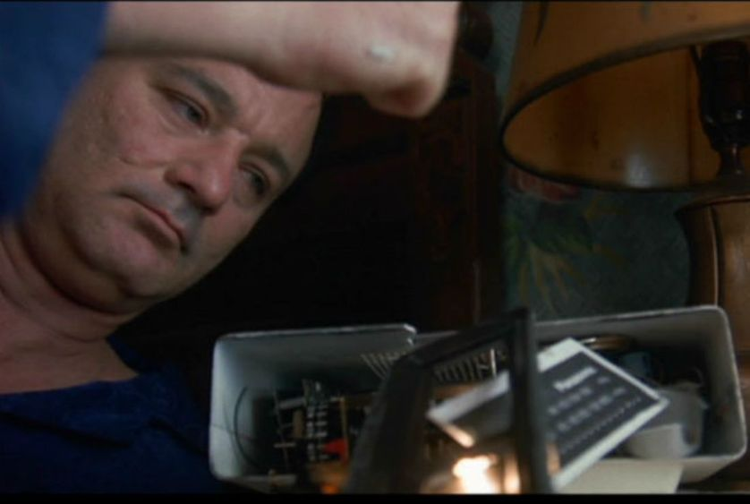
Le film « Un jour sans fin » est un bon exemple de récit singulatif
Le récit répétitif : n.R -> 1.H : les choses se passent une seule fois dans l’histoire mais plusieurs fois à l’écran. Par exemple, dans Snake Eyes (Brian de Palma, 1998), il y a un retour sur les événements, ainsi qu'une accumulation de retours en arrière avec les mêmes scènes, mais vécues de différents points de vue.
Le film de Brian de Palma met en scène beaucoup de répétitions
Le récit itératif : 1.R -> n.H : c’est souvent lié au syntagme en accolade ou à la séquence par épisode. Ce sont des choses que l’on voit en une fois, mais qui indiquent une répétition, une récurrence dans la diégèse. Ce sont des passages qui signifient la répétition mais on le voit en une fois. Par exemple, dans le générique de la série Dexter, on voit des gestes quotidiens du réveil, des rythmes, une musique et des ellipses : on comprend que le personnage effectue cette routine tous les jours, mais on ne le voit ici qu'une fois, la caractère répétitif de l'action est suggéré au spectateur. Dans Je t’aime, je t’aime, le spectateur n’est pas le seul à « subir » ce flux de flashes éclatés : cette stimulation visuelle traduit la situation du personnage balloté entre deux niveaux temporels.
Un film important : Rashomon (羅生門, Akira Kurosawa, 1950)
Ce film a donné son nom à l'effet Rashōmon, qui désigne le fait que plusieurs personnes décrivent différemment le même événement.
Rashomon a été réalisé pendant la période d'occupation américaine du Japon, période pendant laquelle la production cinématographique était très contrôlée et pouvait mener à des interdictions d'exploitation. L'évocation de samouraïs et de combats au sabre étaient interdits, Akira Kurosawa a donc rencontré beaucoup de difficulté pour produire son film, qui ne fut autorisé que par l'assouplissement de la censure (due à la guerre de Corée).
Il y a deux thèmes qui ont profondément marqué le Japon : les bombardements atomiques d'Hiroshima et Nagasaki, et le procès de Tokyo qui venait de s'achever et dont l'empereur a été tenu à l'écart.
SynopsisDans le Japon médiéval, quatre personnes présentent des versions très différentes d'un même crime. Deux des récits sont fournis par l'assassin et le fantôme du défunt (convoqué par un chaman).
La focalisation : l'ocularisation et l'auricularisation
Dans le récit, une grande importance est accordée aux personnages. Tout auteur va donc préparer ses personnages, mais il va aussi devoir faire des choix : c’est en cela qu’on voit le rapport que l’auteur a avec ses personnages. Le spectateur peut aussi avoir plusieurs rapports aux personnages, et avoir plusieurs focalisations par rapport à eux :
La focalisation zéro : c'est comme le « regard de Dieu ». Le narrateur est omniscient et sans limite perceptive (il sait tout, jusqu'aux sentiments des personnages, et même des choses qu'ils ne savent pas).
La focalisation interne : c'est le « regard avec ». Le narrateur se met dans la peau d'un personnage, il connait tout de son intériorité et de son point de vue.
La focalisation externe : c'est la « vision de dehors ». Le narrateur n'a pas accès à l'intériorité des personnages : ici, il en sait moins qu'eux.
Prenons l’exemple de Game of Thrones : le spectateur devient un personnage, mais il est aussi celui qui sait tout de l’histoire.
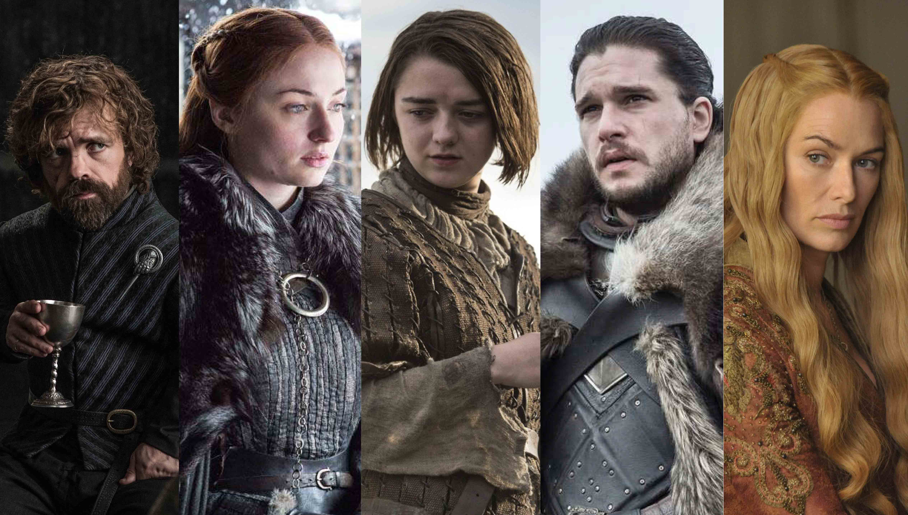
Différents personnages sont introduits au spectateur dans « Game of Thrones »
Cette tripartition de la relation entre le spectateur et le personnage, créée par Tzvetan Todorov dans son livre Les catégories du récit littéraire a été reprise en 1972 par Genette, qui va aller plus loin et proposer le terme de « focalisation », qui s’applique au cinéma et qui est décrit comme le « foyer depuis lequel on apprend, le foyer de la perception ». C'est la tripartition que nous avons vu précédemment avec la focalisation zéro, interne et externe.
François Jost, dans son ouvrage L’œil-caméra, entre film et roman (1987), dit que toutes les précisions qu’il amène à Genette pour le cinéma conviennent aussi à la littérature.
Prenons à présent deux exemples : Halloween : la nuit des masques (John Carpenter, 1979) et Twilight, chapitre I : Fascination (Catherine Hardwicke, 2008). En cinéma, il faut distinguer l’intériorité des personnages. Le premier niveau est le niveau cognitif : que sait le personnage, que pense-il (c’est le cas de Twilight, où nous avons une focalisation externe mais tout de même un savoir interne : nous voyons ce que voit Bella, nous avons accès à ses pensées et la caméra suit ses mouvements. Le but ici est de nous faire adhérer à l'héroïne, à nous rallier à sa cause en nous donnant le même niveau de savoir qu'elle). Le deuxième niveau est le niveau perceptif : ce qu’il perçoit au niveau auditif et visuel (c’est le cas d'Halloween, où le spectateur est « dans les yeux » de Michael Myers mais il ne sait rien de lui). Le troisième niveau est le niveau émotionnel : ce que le personnage ressent (beaucoup de gros plans pour mettre en avant le jeu des acteurs par exemple). Voici une synthèse de ces trois niveaux :
Le niveau cognitif traduit le savoir, les pensées internes et les souvenirs, souvent accompagnés d'une voix over et de flashbakcs dont le personnage est le principal vecteur.
Le niveau perceptif se traduit par le voir et l'entendre.
Le niveau émotionnel se traduit par un accès aux sentiments et aux émotions des personnages, amenés par le jeu d'acteur et les gros plans.
Les frontières de ces 3 niveaux sont faibles et peuvent varier. Selon Genette, la focalisation se défini par une relation de savoir entre le narrateur et les personnages. Il ajoute aussi le « voir », ce qui crée une confusion.
L’ocularisation (traiter le « voir »)
Il y a une ocularisation interne (lorsque l'on est en caméra subjective, comme dans Halloween) ou zéro. Dans l’ocularisation interne primaire, le plan dans son cadrage même nous dit qu’il est interne. Dans l’ocularisation interne secondaire, on a besoin d’un autre plan pour comprendre qu’il est interne (amorce de bras, bruits de respiration, le personnage qui se voit dans un miroir et le spectateur comprend qu'il a son point de vue, etc). Avec l'ocularisation zéro, nous ne voyons pas le monde à travers les yeux des personnages.
Auricularisation (traiter l’« entendre »)
Comme l’ocularisation, l’auricularisation peut être interne (lorsque l'on entend ce que le personnage entend) ou zéro. Un des premiers films à traiter l’auricularisation interne est Un grand amour de Beethoven (Abel Gance, 1936). Au début, on voit Pierret et on entend Pierrot (un visage fondamental dans le processus). En ce qui concerne la découverte de la surdité, on suit la découverte qui est progressive (suspense sur la perception du savoir du personnage).
Pour les plans avec plusieurs personnages, quand on parle de focalisation « sur qui », il faut faire un tri, et pour cela on peut utiliser l’alternance des focalisations. Dans le cas du film de Gance, on a une auricularisation interne de Beethoven et zéro (ou interne) de Pierret.
Le cinéma a voulu tester l’odorisation interne, c’est-à-dire le fait d’insérer une odeur dans la salle. Avec un montage, on a presque pu le faire, comme c’est le cas dans Le Parfum (Tom Tykwer, 2006). À plusieurs moments, il y a un champ-contre champ, avec un raccord sur le nez, ce qui fait comprendre au spectateur que tout se passe au niveau de l'odorat.
Ben Whishaw dans le rôle de Jean-Baptiste Grenouille dans « Le parfum »
Un film important : La Dame du Lac (Lady in the Lake, Robert Montgomery, 1947)
C’est un film noir, tourné totalement en focalisation interne. Il est présenté comme une véritable révolution technique, puisque c’est le premier film tourné presque entièrement en caméra subjective. Ça change le rapport entre le spectateur et le personnage : le spectateur fait partie du film, il est en interactivité avec lui.
SynopsisHollywood, années 1940. Le détective Philip Marlowe (Robert Montgomery) est chargé par Derace Kingsley (Leon Ames) de retrouver sa femme. Elle lui a envoyé un télégramme un mois auparavant pour lui annoncer qu'elle partait au Mexique épouser un certain Chris Lavery (Dick Simmons). Or, Kingsley a rencontré Lavery quelques jours auparavant et il semble tout ignorer de ce voyage. Marlowe enquête dans la résidence des Kingsley où Chrystal Kingsley (Ellay Mort) a été vue pour la dernière fois. Il va y trouver un cadavre dans le lac.
La notion de focalisation est floue chez Genette. Jost utilise aussi ce terme, mais pas dans le même sens que Genette. Qu’est-ce que le spectateur sait en termes d’informations narratives ? Qu’est-ce que le spectateur sait de l’histoire ? Chez Genette, la focalisation peut être interne, externe ou zéro, comme nous l’avons vu précédemment. Chez Jost, la focalisation peut être interne, externe ou spectatorielle. Pour lui, soit le spectateur en sait autant que le personnage (interne), soit il en sait moins que le personnage (externe), soit il en sait plus que le personnage (spectatorielle).
Un exemple de focalisation spectatorielle : à la fin de Citizen Kane, le spectateur uniquement sait ce que veut dire « Rosebud ». On en sait plus que les personnages, ce jeu de focalisation était annoncé dès le début du film et cela donne un avantage au spectateur. S’il y a plusieurs personnages, il faut faire le travail de se demander si on en sait plus que chaque personnage.
La luge de Kane disparaissant dans les flammes
Il y a d’autres exemples de focalisation spectatorielle dans de nombreuses œuvres : Psychose, Les Oiseaux, etc. On met du suspense en ménageant le décalage, le spectateur en voit plus que les personnages. Autres exemples : Scream, The Ward, etc. C’est quelque chose de très présent dans les films d’horreur, où on voit le tueur derrière le personnage sans que celui-ci ne le sache. Le spectateur est ainsi ramené à sa simple place de spectateur.
Si c’est très présent dans les séquences angoissantes, l’omniscience est donnée au spectateur par rapport au personnage dans d'autres genres. Par exemple, dans Le fabuleux destin d’Amélie Poulain (Jean-Pierre Jeunet, 2001), l’omniscience est donnée par la voix-over (elle sait tout et permet de tout savoir), par les images (domination du savoir du spectateur), par le cadrage (qui voit tout, même au-delà du visible) et par le montage (ubiquitaire, on peut tout voir en même car la voix dit « au même instant… »). La focalisation spectatorielle souligne l’avantage du spectateur sur le personnage.
La focalisation externe
La focalisation externe montre que le personnage sait des choses que le spectateur ne sait pas. C’est après coup qu’on réalise, mais parfois on comprend directement (ce qui amène une frustration chez le spectateur). Exemple : Mr. Arkadin (Dossier secret, Orson Welles, 1955) a une focalisation externe par le niveau auditif : on n’entend pas ce qu’il dit à l’oreille de la femme avant de mourir. Il y a le mourant, la femme, le héros et les policiers. Par rapport à la femme, on est en focalisation externe. Par rapport à l’homme c’est interne (il sait qu’il y a un aveu et deux noms, MAIS on en sait plus que lui car on sait qu’il y a un nom de femme : on a un avantage mais ce n’est pas interne). Par rapport au mourant c’est externe, et par rapport au policier c’est interne. Il y a ici un manque de savoir impliqué par un décalage auditif (le personnage entend un élément-clé que le spectateur n’entend pas).
Prenons un extrait de La Belle Noiseuse (Jacques Rivette, 1991) : il y a des mouvements de caméra, mais on ne voit jamais le tableau. Le personnage finit par emmurer le tableau sans qu’on l’ait vu, ce qui amène une frustration pour le spectateur. Il y a ici un manque de savoir impliqué par un décalage visuel (les personnages voient un élément-clé que le spectateur ne voit pas).
Michel Piccoli dans le film de Rivette
La focalisation interne
La focalisation interne est la marque de fabrique de Citizen Kane. Les connaissances du personnage se font par flash-back internes. Quand le narrateur raconte un souvenir, un moment. le verbal va laisser la place à l’image. Le récit en focalisation interne se fait sur des narrateurs délégués homodiégétiques par le biais de flash-back (analepse). Le récit-cadre est le moment où les personnages parlent de Kane. C’est un récit en focalisation interne variable sur divers narrateurs délégués, des enchâssements narratifs successifs et complémentaires, avec des flash-back:
Le premier flash-back intervient quand le tuteur se rappelle la vie de Kane ;
Le deuxième arrive quand c’est Bernstein qui s’en rappelle ;
Le troisième quand c’est Leland qui s’en souvient ;
Le quatrième, c’est Suzie qui s’en souvient.
Voici un schéma explicatif du récit de Citizen Kane, avec les flash-back et les enchâssements du récit :
Le récit de la vie de Kane selon les différents personnages
Le récit ne subit plus la restriction de la focalisation interne. On appelle ce type d’infraction à la cohérence focale une paralepse. Le flash-back montre qu’on va en voir plus que ce qui est mémorisable par la personne, car c’est une énonciation filmique et non pas déléguée.
Un film important : Le Scaphandre et le Papillon (Julian Schnabel, 2007)
C’est d’adaptation d’un récit, d’une autobiographie. L’auteur a dicté son livre entier avec son œil gauche. Le film met en premier plan le battement de cil, comparable au battement des ailes d’un papillon.
SynopsisDans son livre Le Scaphandre et le Papillon, Jean-Dominique Bauby (Mathieu Amalric) raconte comment, alors rédacteur en chef du magazine Elle, il est plongé en décembre 1995 après un AVC dans un coma d'où il ressort vingt jours plus tard affecté du locked-in syndrome. Le seul moyen de mouvement et d'expression qui lui reste est sa paupière gauche ; lettre par lettre (un clignement pour sélectionner la lettre dans l'alphabet qu'on lui lit), il dicte pendant l'été 1996 son livre, qui paraît quelques jours avant sa mort le 9 mars 1997.
Dès les premiers temps du cinéma, la vision subjective était présente, comme dans Les cartes lumineuses (Pathé, 1905), où les amorces montrent une ocularisation interne. Mais c'est surtout par l'utilisation de caches que le cinéma des premiers temps développe sa focalisation subjective.
Pour rappel : la paralepse est le régime dominant de la focalisation. Dans les flash-backs, on voit plus de choses que ce que peut raconter le personnage focal (il y a des détails que l'on voit dans le féash back et que le personnage ne raconte pas). Dans l’énonciation filmique, le cinéma par principe en montre toujours plus que ce dont le personnage peut se rappeler. La paralepse est constitutive du médium filmique : c’est la paralepse effective. La vraie transgression est rare. La paralepse se décrète par rapport au moment où le narrateur narre.
Prenons l’exemple de Titanic (James Cameron, 1997). C’est un film raconté par un narrateur délégué bien après le naufrage : c’est donc une focalisation interne car la situation-cadre montre une Rose âgée raconter les événements. Le récit devrait suivre la mémoire de Rose.
Rose, au début de « Titanic », sous les traits d'une vieille femme
Prenons un autre extrait de Titanic. Il y a un montage alterné qui montre ce qui se passe ailleurs au même moment sans que Rose ne puisse entendre. Le mouvement de caméra glisse des dames au capitaine et on écoute un dialogue plus important narrativement. Au moment où Rose raconte l’histoire (à 84 ans), elle sait peut-être ce qui s’est passé. La discussion entre le promoteur et le capitaine est devenu une légende après le naufrage : Rose a peut-être pu le savoir après, par des enquêtes. Au début du film, on nous avoue ce savoir. Rose peut raconter verbalement ce qui s’est passé ce jour-là.
Cela amène une question : la paralepse assumée pose-elle un problème ? Selon Genette, la paralepse est une marque de liberté, elle réveille l’intérêt des théoriciens. « Nous baptiserons paralepse le type d’altération qui consiste à donner plus d’information qu’il n’est en principe autorisé dans le code de focalisation qui régit l’ensemble » (Gérard Genette).
Éléments d’histoire de la « vision subjective » au cinéma
La paralepse est une infraction à la focalisation interne. La vision subjective n’est pas égale à la caméra subjective (qui est la caméra comme étant l’œil d’un personnage). La vision subjective est la possibilité de donner aux spectateurs une vision qui cadre avec la vision du personnage.
On trouve des exemples de caméra subjective dans le cinéma des premiers temps, comme dans Les cartes lumineuses (Pathé, 1905). Ce sont des plans qui assimilent l’objectif de la caméra à l’œil du personnage. On le voit car il y a une amorce (un fragment de corps dans le champ), ou un visage de cache. Mais on ne peut pas parler de focalisation interne dans ces films des premiers temps, car le but est de nous faire partager une expérience visuelle. Les personnages deviennent eux-mêmes des spectateurs, par exemple l’œil devient le sujet de la vision subjective. Le code de la caméra subjective trouve ses racines dès les premiers temps du cinéma, mais sans que l’on puisse appeler ceci ainsi. Quand la narration prend le dessus, le montage se codifie et des codes (comme le raccord-regard) se systématisent et le spectateur s’habitue.
Dans les années 20 apparaissent l’impressionnisme français, l’avant-garde française et un essor de la réflexion sur le cinéma (création de revues, etc). La caméra subjective est travaillée de manière expressive et devient peu à peu populaire. Prenons un extrait de Menilmontant (Dimitri Kirsanoff, 1926). Kirsanoff était un avant-garde impressionniste français, et son film est un exemple de caméra subjective dans les années 20. On y trouve une caméra subjective, une occularisation interne (la caméra à la place des yeux) : il faut avoir le mouvement de caméra qui montre la subjectivité du plan. On saisit ça aussi avec les raccord-regard. Les mouvements se surimpressionnent, ce qui montre une focalisation affective (partage d’un effet de malaise). L’impact est qu’on s’identifie au personnage de la jeune femme et on est mal à l’aise avec elle.
La caméra subjective dans le cinéma de Dimitri Kirsanoff
Selon Pierre Porte, le cinéma est un moyen d’accéder à la focalisation interne, c’est le seul média capable de faire ressentir des choses avec les personnages. Porte fait le vœu d’un film tourné en caméra subjective (par exemple La Dame du Lac), mais cette théorie s’affaiblit avec l’arrivée du son. Néanmoins, elle reviendra avec le film noir. Ce genre repose sur l’adaptation de romans policiers américains, ils étaient écrits en « je » (le « je » du détective), donc la question de la subjectivité ressort. La voix over au « je » montre que la voix du narrateur plane au-dessus de tout. Ça se développe aussi avec le monologue intérieur. Hitchcock travaille le monologue intérieur dès 1930.
Mais les voix-over ne sont pas nécessairement celles d’un personnage présent dans l’histoire. Par exemple, dans le film Sunset Boulevard (Billy Wilder, 1950), la voix-over en « je » est celle d’un mort qui raconte ce qui lui est arrivé.
Les occurrences antérieures
La recherche de focalisation du film noir concerne aussi le visuel. L’amorce joue la proximité avec la focalisation interne. Il y a aussi la voix-over au « je » d’un bonimenteur homodiégétique (comme dans Le roman d’un tricheur de Sacha Guitry, 1936). Avec la caméra subjective, les prises sont longues, il faut attendre le bon moment pour justifier une coupe au noir. Montgomery fait tout passer par les yeux du personnage. Le visage de l’acteur se reflète dans l’objectif, comme un miroir.
L’intériorité d’un personnage
Pour illustrer l’intériorité d’un personnage, prenons un extrait de La Dame du lac : les mouvements de la caméra donnent l’impression que ce n’est pas naturel, et ça donne un caractère très mécanique à la scène, très peu humain. On a l’impression d’une énonciation marquée, on comprend que quelqu’un est à côté de la caméra et que ce n’est pas la caméra elle-même qui se lève et qui s'avance. Le personnage principal va très lentement, il bouge la tête très lentement également, et la fumée qu'il expire semble se situer loin de la caméra, et donc des yeux : ce sont des indices qui nous montre que filmer en caméra subjective, à l’époque, était novateur, mais également assez compliqué. Ce procédé nous met face aux manquements à la norme.
Un film important : Stay (Marc Forster, 2005)
C’est un film hollywoodien fait par un Suisse. Le projet devait d’abord revenir à David Fincher, qui abandonne très vite le projet, et c’est finalement Marc Foster qui réalisera ce film.
Un élément visuel récurrent est le pont de Brooklyn, visible discrètement dans beaucoup de plans, et qui jouera finalement un rôle-clé dans l’intrigue.
SynopsisSam Forster (Ewan McGregor), psychiatre, reçois un jour à son cabinet un étudiant, Henry Letham (Ryan Gosling). Il apparaît comme quelqu'un de dépressif, et confie au psychiatre qu'il a décidé de se suicider dans 3 jours. Se lance alors une course effrénée contre la montre pour Sam, qui cherche à découvrir les raisons du mal-être du jeune homme, afin de pouvoir le sauver.
Si nous reprenons notre exemple de La Dame du Lac, nous pouvons voir une ocularisation interne de la perception qui débouchera sur la voix. Il faut donc distinguer voir, savoir et entendre.
Il y a une notion de contrainte face à la caméra subjective : on se sent plus obligé de regarder que libre de faire ce qu’on veut. Il y a une sensation de violence faite au spectateur, puisqu’on l’oblige en quelques sortes à regarder. De plus, le film empêche que se fasse l’identification au personnage puisqu’avec la caméra subjective, on ne le voit pas. Avec un éloignement adéquat des sources sonores et pas de remise en cause du verbocentrisme, le son est travaillé de manière classique. On joue sur le sifflement qui se veut une marque du fait qu’on incarne quelqu’un. La musique extradiégétique contredit l’ocularisation interne, la musique est justifiée par un effet de dramatisation. On souligne des éléments de focalisation et on essaie de nous mettre en empathie avec le personnage focal.
Normalement, l’ocularisation interne marche quand elle est appliquée à un moment de perception déviante (quand le personnage est saoul, choqué, blessé…), pour rendre compte d’un écart à la norme. Ici, elle normalise ça. Les petits écarts doivent correspondre à notre expérience quotidienne.
Prenons un autre extrait de La Dame du lac. Lorsque le détective s’adresse à la femme, c’est un moment de misogynie. En voulant dépeindre un regard normal et neutre, ça dépeint en fait un regard masculin, hétéro et macho. Ce qui était la norme à l’époque, donc un regard normal, mais qu’on ne pourrait pas considérer comme normal aujourd’hui. C’est une séquence qui marche bien au niveau technique (le jeu des ombres et du miroir sans qu’on voit la caméra par exemple). Le film renvoie toujours à son dispositif, son énonciation.
Le tour de force réside dans le fait de ne pas montrer la caméra dans le miroir
Toujours dans ce films, si nous prenons la scène de la découverte du cadavre dans la douche, nous pouvons y voir une démarche déductive exemplaire (on va d’un indice à l’autre, comme dans un jeu vidéo), qui construit le savoir narratif et traduit dans le mouvement de la caméra le travail déductif du personnage. Mais c’est trop machinal et lent. Il manque une émotion du personnage au moment de voir le corps, une certaine spontanéité, qu’on ne peut pas voir puisque nous sommes en caméra subjective. Ça nous donne l’impression que c’est une machine, et à ce moment on se rend compte du travail filmique. Dans le but du film, le nuage affectif est laissé vide pour laisser le spectateur indépendant de ses sentiments. Il y a une volonté d’incarner la caméra pour notre affectivité. Ce que cherche le réalisateur, c’est la possibilité de se substituer au personnage, de le remplacer dans l’enquête.
Plus les indices apparaissent, plus le spectateur comprend ce qui se passe
Mais il y a un problème : le modèle du jeu vidéo aujourd’hui, qui prône l’interactivité. À la télévision, dans les jeux, on a beaucoup plus développé la question de la caméra subjective. L’interactivité est plus grande, donc ce genre de film n’a plus grand intérêt pour le cinéma aujourd’hui.
R. T. Eberwein a dit, à propos de La Dame du lac, que ce film offre l’équivalent d’un récit écrit, non pas à la première mais à la deuxième personne. C’est comme si l’on nous racontait, tout au long du roman : « Ensuite vous regardez la dame entrer dans l’immeuble » ; « vous conduisez de plus en plus vite jusqu’à ce que la voiture se fracasse contre le poste » ; « vous tirez sur l’homme avec votre revolver », etc. Eberwein trouve cela insupportable comme méthode de filmage. Aujourd’hui, cela se rapprocherait du roman à choix type « Roman dont vous êtes le héros », mais pour le cinéma.
La théorie de l’énonciation : modèle linguistique
Emile Benveniste disait qu’« il faut prendre garde à la condition spécifique de l’énonciation : c’est l’acte même de produire un énoncé et non le texte de l’énoncé qui est notre objet. [...] Le locuteur s’approprie l’appareil formel de la langue et il énonce sa position de locuteur par des indices spécifiques ». Benveniste est le premier à populariser la notion d’« dénonciation ». L’énonciation est l’acte même de produire un énoncé. C’est déplacer le regard, considérer différemment le récit. L’énonciation, c’est quand quelqu’un parle et s’adresse à quelqu’un d’autre. Il y aurait des indices (aussi appelés marques d’énonciation) de production du discours. L’énoncé reste l’objet d’étude mais le vrai objet est donné par les indices de l’énonciation. Pour Benveniste, les indices sont des déictiques. « Aujourd’hui », « demain », « hier », « ici », « là-bas », « je », « tu », etc. Ce sont des mots sans sens quand ils sont séparés de la situation d’énonciation, mais qui prennent tout leur sens quand ils sont mis bout à bout dans un énoncé.
Discours vs histoire (effacement, transparence) : la transparence est ce qui semble se raconter seul, le film doit se raconter seul pour que le spectateur se sente immergé (avec un regard-caméra d’un personnage, ça montre le dispositif filmique et ça rappelle au spectateur sa place, donc ça brise la transparence : le spectateur n’est plus immergé dans le film). Selon les termes d’Emile Benveniste, le film traditionnel se donne comme histoire, non comme discours. Il est pourtant discours, si on le réfère aux intentions du cinéaste, aux influences qu’il exerce sur le public, etc. ; mais le propre de ce discours-là, et le principe même de son efficacité comme discours, est justement d’effacer les marques d’énonciation et de se déguiser en histoire. Le film serait « l’exemple-type du réflexe du discours qui devient histoire », selon Metz.
La théorie de l’énonciation au cinéma (Christian Metz)
Pour Metz, si un film est comparable à un énoncé, c’est qu’il y a des traces d’énonciation au cinéma, mais elles doivent rester impersonnelles. L’instance énonciative (le réalisateur, l’équipe, la machine, etc) n’est pas personnelle, c’est tout une instance qui produit des indices et des traces du dispositif de production. Toutes les structures réflexives rendent conscient que le film est un film, on se rend compte de la machine « cinéma ». Le film est le discours d’une instance, il ne se raconte pas tout seul. Les déictiques au cinéma sont des brisures de la transparence par des marques d’énonciation. La subjectivité de la caméra est une zone limite. Les marques d’ocularisation deviennent des marques d’énonciation : on voit la machinerie du film.
Par exemple, le « camera act » dans La Dame du lac (le fait que c’est la caméra qui « fait » les choses), c’est comme si le dispositif était rendu vivant. Ce film suscite tant de choses, il est à l’origine de pleins de théories et de films sur la vision subjective.
Un film important : Absolut (Romed Wyder, 2004)
C’est un film suisse, et il pose une situation d’énonciation filmique intéressante. Le film propose un vrai questionnement sur la limite entre le documentaire et la fiction.
SynopsisLe jour où Alex (Vincent Bonillo) tente de poser un virus informatique dans une banque, un accident de voiture lui fait perdre sa mémoire à court terme. En se réveillant à l'hôpital, on lui dit qu'il est resté deux jours dans le coma. Que s'est-il passé ? Alex suit une thérapie afin de retrouver ses souvenirs de cette journée. Pour lui, visions et réalité se confondent en un nœud troublant. Il tentera de s'en extirper, d'autant plus que ce qu'il découvre s'avère inquiétant...
Les marques d’ocularisation peuvent devenir des marques d’énonciation, comme c’est le cas dans La Dame du lac.
Le cas du Scaphandre et le Papillon
L’acteur a un statut tellement subjectivisé que la caméra « devient » lui. Dans l’extrait du début du film, on travaille sur les limites de l’ocularisation interne et externe. Le spectateur pense que c’est un dialogue, mais la voix du personnage est-elle en voix in ? Non, c’est une voix-over en auricularisation interne, autrement dit un monologue intérieur.
L’enjeu du film est l’avènement intradiégétique de cette voix-over. Dans le roman, il y a une voix narrative, dans le film la voix peut avoir différents statuts. Par l’écriture, sa « voix » va exister dans le monde intradiégétique. Le film retrace comment cette voix finit par se faire entendre.
L’ocularisation interne va capturer notre regard, on se sent prisonnier de la caméra, c’est un emprisonnement visuel. Le réalisateur se sert de cette sensation pour rendre compte de ce que ressent le personnage. Par exemple, pour rendre compte de la défaillance optique de la vue du personnage : il doit se faire coudre la paupière, on restreint donc la vue par ce procédé. Il y a donc une limitation spatiale du champ visuel par le décadrage (on ne voit pas l’entier des locuteurs).
La vue du personnage, et également du spectateur, est restreinte diégétiquement
Il y a beaucoup d’ingéniosité technique pour ce film, comme la caméra portée en fauteuil, le masque du visage de l’acteur, le volet de l’obturateur réglé pour donner l’impression d’un clignement d’œil, la manivelle permettant de créer des surimpressions, etc. La visée est l’impact émotionnel, le spectateur ressent presque physiquement ce que ressent le personnage. La focalisation optique se réalise par l’œil. Le spectateur ressent les mêmes contraintes que le personnage : ça donne lieu à une identification émotionnelle, et presque physique, au personnage.
Les battements de cil permettent de sortir du scaphandre, puisque le personnage est riche de visions oniriques. Ce pouvoir d’imagination est décrit comme un cinéma personnel que se fait le personnage, mais dans le film c’est un cinéma impersonnel. C’est un acte énonciatif. Le mouvement pour passer du scaphandre au papillon se traduit par un passage de l’ocularisation à l’énonciation. L’expérimentation de ce film est fascinante.
Dans le cinéma, il peut y avoir une stylisation par le maquillage, la lumière, la mise en cadre, etc. Par exemple, dans Le Cabinet du Dr. Caligari, on peut voir de la stylisation à tous les niveaux (les décors, le maquillage, le montage, le jeu d’acteur, etc) : ces marques sont redevables à l’instance énonciative et ce sont des marques de focalisation interne, car l’histoire est narrée dans un lieu normal. La déformation visuelle est dû à la folie du narrateur. La déviance visuelle devient un indice de la déviance psychologique du personnage sur lequel on est focalisé.
Autre exemple : prenons Stay, qui exploite l’idée de stylisation. Il y a des marques d’énonciation (qui font sortir de l’immersion), elles brisent la transparence (qui, elle, vient avec des raccords, la règle des 180° et d'autres règles stylistiques), comme des faux-raccords, des regards-caméra, etc. L’énonciation impersonnelle est la marque du dispositif cinématographique. Stay détourne les codes de la transparence par plusieurs marques d’énonciation.
Dans Stay, la règle des 180° est brisée : entre chaque colonne, Ewan McGregor et Ryan Gosling changent de place. La règle des 180° permet de ne construire qu’une partie du décor. Les personnages changent de place mais la caméra reste dans le même axe (c'est une coupe). On les voit aussi sortir de deux colonnes à la fois, on voit McGregor dans un autre espace mais à la suite de la séquence. Les personnages échangent leur place. Tous ces cas de transgressions de la règle des 180° montrent l’effet miroir qui est travaillé par les marques d’énonciation. L’espace est irréalisé, mais le temps aussi : la temporalité est irréalisée. Ce ne sont pas des coupes franches, il y a des marques d’énonciation qui montrent que le film est composé de plusieurs séquences. L’événement se passe une fois dans l’histoire, mais on le voit plusieurs fois : on pourrait hésiter entre répétitif et singulatif.
La scène des colonnes dans « Stay »
La scène finale de Stay
Tout le film a pour sujet une NDE (nearly-dead experience), où Henry projette des visions de sa vie. Le réalisateur s’est inspiré de ce que les gens ayant vécu cette expérience ont raconté. Il y a encore des effets de lumière et des modifications, comme une ocularisation interne qui serait des projections hallucinatoires. Dans ce film, la réalité du récit-cadre est mélangée avec les hallucinations. Les marques d’énonciation sont marques de la subjectivité. Dans ce film, les marques d’énonciation sont devenues des marques de focalisation.
Un film important : Des oiseaux, petits et gros (Uccellacci e Uccellini, Pier Paolo Pasolini, 1966)
Il s’agit d’un film très politique, et très intéressant au niveau du son. Les génériques de début et de fin du film ont la particularité d'être chantés.
SynopsisTotò (Antonio De Curtis) et son fils Ninetto (Ninetto Davoli) errent dans la périphérie de Rome. Sur leur chemin, ils rencontrent un corbeau. Le film précise dans un sous-titre : « Pour qui aurait des doutes ou aurait été distrait, nous rappelons que le corbeau est un intellectuel de gauche, disons ainsi, d'avant la mort de Palmiro Togliatti. »
Le corbeau leur raconte l'histoire de frère Ciccillo et frère Ninetto, deux moines franciscains à qui Saint François d'Assise ordonne d'évangéliser les faucons (les puissants) et les passereaux (les humbles). Les deux moines réussissent à évangéliser les deux « classes » d'oiseaux, mais ils échouent à mettre fin à leur rivalité : Saint François leur explique la guerre dans une perspective marxiste et les invite à reprendre leur évangélisation.
Le voyage de Totò et Ninetto continue. Le corbeau les suit en continuant à parler. Les personnages rencontrent successivement plusieurs autres personnages en chemin. À la fin du film, les deux hommes, fatigués du bavardage du corbeau, le tuent et le mangent.
Parlons à présent des images mentales, et pour cela prenons un extrait de La ruée vers l’or (Charlie Chaplin, 1925). Lorsque le compagnon de Charlot l’imagine en repas, c’est une image mentale que se fait le personnage, et dont il donne accès au spectateur.
Les images mentales ne sont pas des ocularisation, car ces images sont exceptionnelles, aujourd’hui c’est une tendance contemporaine. Les films qui travaillent ces images mentales de la folie deviennent courant, comme c’est le cas dans Fight Club, The Machinist, Sixième sens, Le Labyrinthe de Pan, et encore bien d'autres films. Dans ces œuvres, il est intéressant de se demander si ce sont des hallucinations amenées par les personnages, ou la réalité.
L’ocularisation est utilisée aujourd’hui dans d’autres domaines que le cinéma. Par exemple, dans les jeux vidéo, on voit beaucoup le développement de l’ocularisation interne : on voit le personnage, on ne voit pas juste à travers ses yeux. Par exemple, dans la saga Far Cry (Crytek, 2004), le joueur « est » le personnage, il joue à la première personne. En opposition, dans les jeux Assassin’s Creed (Ubisoft, 2007), le joueur n'est pas en ocularisation interne car il voit le personnage qu’il contrôle.
Capture d'écran tirée du jeu « Assassin's Creed : Odyssey »
Enter the Void : la perception du junkie vivant
Enter the Void (Gaspar Noé, 2010) est un film qui s’approprie tous les procédés de la vision. Dans la perception du personnage du junkie, joué par Nathaniel Brown, on est en oricularisation interne (on entend tout comme lui), et le clignement des yeux est particulier. C’est un état déviant, on peut interpréter ces clignements comme un signe de son état.
L’amorce de la main vient de sous la caméra : dans cet état déviant, le rapport au corps et la mobilité est différent. Il y a une voix over en même temps que le spectateur voit le personnage dans le miroir, ça montre qu’on se situe dans sa tête. Les déviances sont aussi sonores, et ce film le montre bien.
Enter the Void : la perception de l’esprit du junkie
Nous sommes dans une ocularisation interne de son esprit. C’est ici une focalisation spectatorielle (selon les termes de Jost), car le spectateur en sait plus que les personnages, et plus que le junkie lui-même. La mobilité est plus grande pour le spectateur, mais il entend juste les paroles des gens. Il y a une certaine ubiquité dans cette caméra mobile, c’est-à-dire qu’elle donne la capacité d’être présent dans plusieurs lieux en même temps.
Enter the Void : la perception des souvenirs du junkie qui défilent
Le fait de placer le spectateur dans le dos du personnage montre une amorce de sa nuque et de son dos. C’est quelque chose que l’on retrouve dans plusieurs films, comme dans Elephant (Gus Van Sant, 2003), où le spectateur va suivre le quotidien des lycéen en étant placé dans leur dos. Nous pouvons mettre en lien cette pratique avec les jeux vidéos, où le spectateur guide son personnage et il est automatique placé dans son dos.
Dans le film de Noé, les perceptions et les souvenirs que le spectateur va explorer sont déviants. Les sons sont subjectifs, les écrans sont présentés avec des projections : on retrouve plusieurs motifs de la déviance, comme c’était déjà le cas dans Stay. Ici, on fait partager au spectateur des sentiments : voir un film devient alors une expérience.
Restauration et conservation des films : méthodes et débats théoriques
Tous les films ont un problème de source et de copie : c’est difficile d’avoir la source exacte. Cette problématique concerne surtout et avant tout les cinémathèques, qui se sont associées entre elles. Elles ont décidé entre elles de plusieurs principes : les archives avaient deux buts, préserver le patrimoine cinématographique mondial et le rendre visible pour tous. Mais pratiquement parlant, il y a une contradiction : en montrant le film, le projecteur peut l’abîmer, on ne peut donc pas être sûr de le préserver. Pour préserver à long terme des films, il faut les cacher ou les « perdre » (pour que les gens l’oublient). La projection n’est pas la seule chose qui détruit un film. A l’époque, les films étaient faits en nitrate de cellulose, une manière très dangereuse (on ne pouvait pas entrer dans un train avec des bobines en nitrate de cellulose), et ils avaient tendance à s’auto-enflammer sans qu’on puisse les éteindre. La préservation demande aussi à ce que le film ne s’abîme pas seul.
Il n'était pas rare que les pellicules s'enflamment seules
Pour la restauration, le matériel filmique de base dans l’archive est à préserver. Le cinéma est différent des autres arts car il est reproductible à l’identique. Quand les archives possèdent un film, elles doivent le considérer comme un original car c’est peut-être la seule version complète qu'il existe. Pour pouvoir préserver des films en les montrant, on va devoir faire des copies depuis l’original. On travaille pour le reste de la duplication avec la copie uniquement. Une démarche supplémentaire est éventuellement possible : la reconstruction. Mais quels films choisir, et quelle méthode ? Prenons l’exemple de The River (Frank Borzagee, 1929). La reconstruction a été réalisée par la cinémathèque suisse, à partir de films 16mm, plus une séquence en 35mm (censurée en Suède), des cartons (qui expliquent les morceaux de scénario qui manquent), des photographies, des documents divers et une bande sonore Movietone. Il a néanmoins fallu demander l’aide d’autres cinémathèques.
Il existe plusieurs versions que l’on peut choisir dans le processus de reconstruction d’un film :
La version du réalisateur, le projet original du créateur. Il faut comparer différentes copies disponibles MAIS il faut être sûr que les morceaux de films qu’on prend ont été approuvés par le réalisateur lui-même. Problèmes possibles : il n’y a aucune version originale connue ou il existe plusieurs versions originales (exemple : Viaggio in Italia, Roberto Rossellini, 1954. On remarque des différences entre les versions originales italienne et anglaise).
La version montrée. Une version que les gens ont déjà vue, telle qu’elle a été faite à l’époque (avec les censures de l’époque par exemple). On travaille donc avec des copies d’époque, avec leurs dégradations, et éventuellement d’autres sources secondaires selon le film et le moment de projection qu’on considère (articles décrivant le film, revues professionnelles, etc).
La version telle que retrouvée dans les archives. La source est le matériel tel qu’existant dans l’archive donnée. On inclut des rushs s’il manque des scènes, mais le matériel principal est le film retrouvé dans les archives, tel quel.
Une nouvelle version. La reconstruction est créative. Par exemple, l’ajout de musique dans un film muet est une nouvelle version de ce film, qui est valide.
La version « et si ? ». Par exemple, on peut ajouter des couleurs sur un film en noir et blanc, en s'imaginant quelles couleurs le réalisateur aurait donné aux éléments du film s'il avait pu le faire. Les sources sont l’imagination du restaurateur, des sources secondaires informant de projets non-réalisés du réalisateur, etc.
Un film important : Le chanteur de jazz (The Jazz Singer, Alan Crosland, 1927)
C’est le premier film parlant de l’histoire. Bien qu’il soit en grande partie muet et sonore (à cause de la musique), il y a un dialogue de plusieurs minutes entre deux personnages, ce qui était quelque chose de totalement inédit au cinéma à cette époque.
Le film reçoit un Oscar en 1929, lors de la toute première cérémonie des Sscars, mais qui honorait les films dès 1927. The Jazz Singer reçoit sa récompense à ce moment, avec un décalage de 2 ans. Il sera félicité pour avoir révolutionné l’industrie du cinéma, avec du son sur disque.
Le film contient une séquence où le personnage principal fait du « blackface », c'est-à-dire qu'il se peint le visage en noir pour imiter une personne noire sur scène. Cette séquence, acceptable à l'époque, serait très mal reçue aujourd'hui.
SynopsisLe chantre Rabinowitz (Warner Oland), furieux d'avoir trouvé son fils Jakie (Al Jolson) en train de chanter dans un bar, le chasse de chez lui. Quelques années plus tard, Jakie est chanteur de jazz dans un night-club et sa carrière décolle doucement : il est propulsé sur les scènes de Broadway pour y faire un spectacle qui ferait de lui la nouvelle vedette de la chanson. Mais le concert tombe le soir de Yom Kippour, et le père de Jakie, très malade, est incapable de chanter à la synagogue. Sa mère et un voisin essaient de convaincre Jakie de participer à la célébration et, incapable de résister, il se précipite à la synagogue pour y chanter la prière traditionnelle. Son père meurt heureux et, quelques années après, Jakie est de nouveau sur scène et obtient un grand succès, sous le regard de sa mère.
Pour terminer ce travail, prenons un extrait du film Un chien andalou (Luis Buñuel, 1929). Lorsque Buñuel tranche l’œil de la jeune femme, c’est à interpréter comme un signe et une représentation de la volonté de renouveler la vision, ainsi que notre manière de regarder des films. Buñuel faisait parti du mouvement des surréalistes, mouvement qui souhaitait atteindre l'essence même du cinéma, et offrir aux spectateurs une expérience, une nouvelle vision des films.
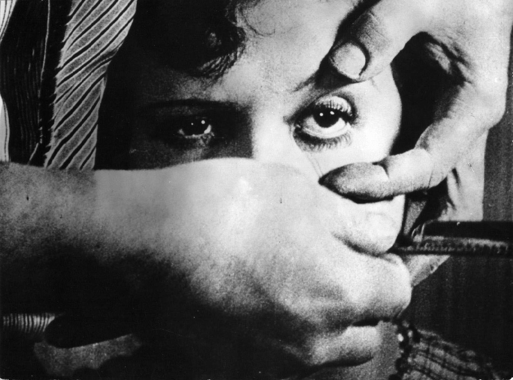
La scène la plus emblématique d'« Un chien andalou », et de tout le cinéma surréaliste
Ces représentations de la vision et cette manière subtile de dire au spectateur de regarder autrement les films était déjà présente chez Méliès. Dans le film Le voyage dans la Lune (Georges Méliès, 1902), lorsque la fusée s’écrase dans l’œil de la lune, on peut y voir une rupture de la vision, qui ouvre le spectateur à de nouvelles manières de voir le monde qui l’entoure, ainsi que les œuvres cinématographiques produites.
Au final, et comme le disait Guillermo del Toro, « Le miracle, c’est de savoir regarder ».
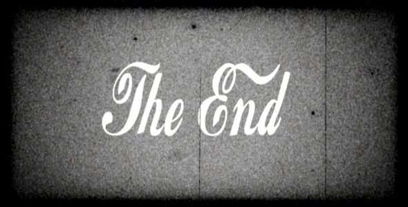
Références
Ce travail s'est basé sur les cours Introduction aux études cinématographiques : théories de Valentine Robert et Introduction aux études cinématographiques : histoire de Benoît Turquety, tous deux donnés pendant l'années académique 2016-2017 à l'université de Lausanne. Des informations complémentaires concernant les films importants présentés à chaque fin de chapitre ont également été prises sur le site IMDb.
Voici la liste des oeuvres abordées pendant ce travail, dans leur ordre de sortie :
Le cabinet du Dr Caligari (Das Cabinet des Dr. Caligari, Robert Wiene, 1919)
La Grève (Стачка, Sergueï M. Eisenstein, 1924)
Le cuirassé Potemkine (Броненосец «Потёмкин», Sergueï M. Eisenstein, 1925)
Ménilmontant (Dimitri Kirsanoff, 1926)
Le chanteur de jazz (The Jazz Singer, Alan Cosland, 1927)
La passion de Jeanne d'Arc (Carl Theodor Dreyer, 1928)
Un chien andalou (Luis Buñuel, 1929)
Les lumières de la ville (City Light, Charlie Chaplin, 1931)
M le maudit (M - Eine Stadt sucht einen Mörder, Fritz Lang, 1931)
Tarzan, l'homme sing (Tarzan the Ape Man, Woodbridge Strong Van Dyke II, 1932)
King Kong (Merian Caldwell Cooper, 1933)
La Cucaracha (Lloyd Corrigan, 1934)
Fantasia (prod. Walt Disney, 1940)
Citizen Kane (Orson Welles, 1941)
Le faucon maltais (The maltese Falcon, John Huston, 1941)
La belle et la bête (Jean Cocteau, 1946)
La dame du lac (Lady in the Lake, Robert Montgomery, 1947)
La corde (Rope, Alfred Hitchcock, 1948)
Printemps tardif (晩春, Yasujirō Ozu, 1949)
Rashomon (羅生門, Akira Kurosawa, 1950)
Un tramway nommé désir (A Streetcar Named Desire, Elia Kazan, 1951)
Chantons sous la pluie (Singin' in the Rain, Stanley Donen et Gene Kelly, 1952)
Fenêtre sur cour (Rear Window, Alfred Hitchcock, 1954)
À bout de souffle (Jean-Luc Godard, 1960)
Psychose (Psycho, Alfred Hitchcock, 1960)
Des oiseaux, petits et gros (Uccellacci e uccellini, Pier Paolo Pasolini, 1966)
Playtime (Jacques Tati, 1967)
Je t'aime, je t'aime (Alain Resnais, 1968)
Orange mécanique (A Clockwork Orange, Stanley Kubrick, 1971)
Les dents de la mer (Jaws, Steven Spielberg, 1975)
Monty Python : Sacré Graal ! (Monty Python and the Holy Grail, Terry Gilliam et Terry Jones, 1975)

 "
"